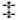
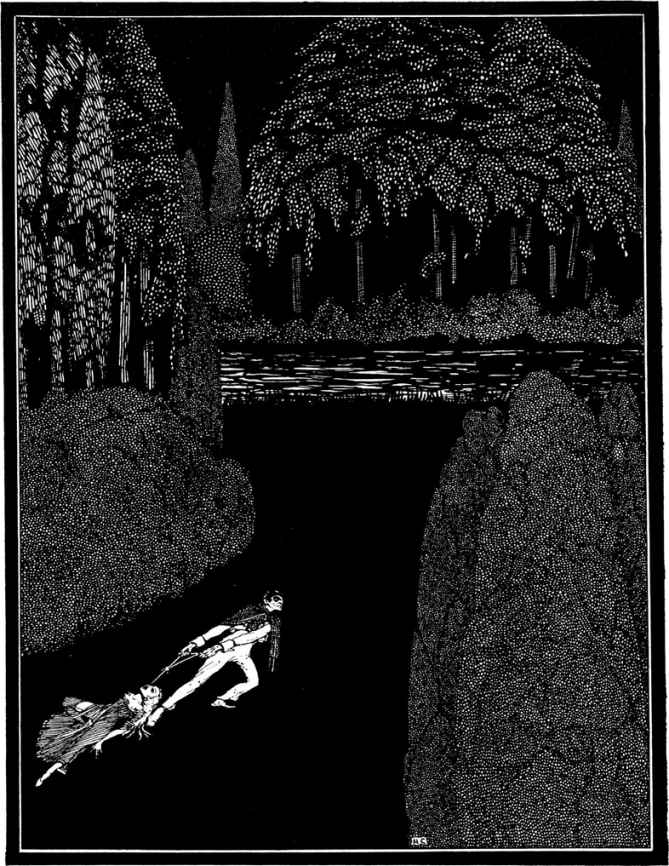

、？和3代表的o、u和g。
、？和3代表的o、u和g。9和2各出现5次。
：和3各出现4次。
?出现3次。
出现2次。
—.出现1次。
“而在英语中，出现频率最高的字母是e。其余依序是：a o d h n r s t u y c f g I m w b k p q x z。然而e的使用频率是那么高，以至于在任何一个不论长短的单句里，都很少发现出现次数最多的字母不是e。
“这样，我们从一开始就有了这个并非纯粹猜测的根据。很明显，我列的这种统计表用途很广泛，不过单就这份密码而言，我们只需要稍稍借助于它的部分用途。因为我们这份密码中用得最多的符号是8，我们不妨一开始就假设符号8代表字母表中的e。为了证实这个假设，让我们来看看是否8在这份密码中一再叠用，因为e这个字母在英文中常常叠用，譬如像在‘meet’‘fleet’‘speed’‘seen’‘been’和‘agree’等单词中那样。眼下这份密码虽说很短，可8这个符号的叠用却多达5次。
“因此让我们假定8就是e。而在英语中，最常用的单词是‘the’，所以让我们来看看密码中是否一再出现按相同顺序排列而且末尾是8的3个符号。如果我们发现这样排列的3个符号一再重复，那它们很可能就代表‘the’这个字眼。细细一查，我们会发现这样的排列至少出现了7次，排列的符号是“;48”。于是我们就可以假定这个分号代表t，4代表h，而8则代表e。现在最后这个假定已被充分证实。这样我们就迈出了一大步。
“而我们一旦确认了一个单词，我们就能够确定非常重要的一点，即我们能够确定其他几个单词的词头和词尾。现在让我们以离密码结尾不远处的倒数第2个“;48”组合为例。这下我们知道紧随其后的那个分号是一个单词的词头，而接在‘the’这个单词后面的6个符号我们至少认识5个。让我们把这些符号变成我们已知的它们所代表的字母，为那个未知的字母留出一个空格——
t eeth。
“现在我们一下子就能看出末尾的‘th’并非一个以t开头的单词之组成部分，从而将其排除，因为把字母表中的全部字母逐一填入上面那个空格试拼，我们都发现不可能拼出一个th结尾的单词。于是我们把它缩短为
t ee，
若有必要，可像先前一样把全部字母逐一填入空格，我们会发现只有‘tree’是唯一拼得通的单词。这样，有了‘the tree’这两个并列的单词，我们又得到了由“(”代表的字母“r”。
“顺着这两个已知的单词稍稍向后推延，我们会又看到一个“;48”符号组合，把这一组合作为这一小段的末尾，于是我们得出以下排列：
the tree;4(34 the，
或者用已知的字母替换出代表它们的符号，排列读成：
the tree, thr3h the。
“现在要是把未知的符号变为空格或用圆点代替，我们便读到如下字样：
the tree thr...h the，
这时‘through’一字便显露无遗。而这一发现又给了我们3个新的字母，即分别由、？和3代表的o、u和g。
“现在要是把密码从头到尾仔细看一遍，找出已知符号的组合，我们会在离开头不远的地方发现这个排列，
83(88，或译成egree，
这一看就知道是‘degree’这个单词后面的部分，于是我们又知道了符号“ ”表示字母d。
”表示字母d。
“在与‘degree’这个单词间隔4个符号之后，我们看到这样的组合：
46(;88*
“译出已知的符号，未知的依然用圆点代替，我们便读到：
th.rtee.
这一字母组合马上就暗示出‘thirteen’这个单词，这又为我们提供了两个新的译码暗号，字母i和n分别由符号6和*表示。
“这下来看看密码的开头，我们看到这个组合，
53，
“像先前一样破译，我们得到
.good
这使我们确信那第一个字母是A，而密码开头的两个字是“A good”。“为了避免混淆，我们现在应该把已经发现的译码暗号列成一张表，列表如下：
5代表a
代表d
8代表e
3代表g
4代表h
6代表I
*代表n

代表o
(代表r
；代表t
“所以我们至少已经破译出至关重要的字母中的10个，而破译的详细过程我们无须在此赘述。我所说的已经足以使你相信这类密码不难破译，而且让你对破译密码的基本原理有了几分了解。不过请相信，我们眼前的这个例子属于密码中最最简单的一类。现在唯一要做的就是让你看根据羊皮纸上那些已被解答的符号破译出的密码全文。请看：
‘一好镜在毕晓普客栈在魔鬼的椅子21°13′东北偏北主枝第七丫枝东侧从骷髅左眼落子弹一直线从树经子弹到50英尺外。’”
“可是，”我说，“这谜似乎仍然和先前一样费解。怎么可能解释这些莫名其妙的话呢，什么‘魔鬼的椅子’‘骷髅’，还有‘毕晓普客栈’？”
“我承认，”勒格朗说，“这事晃眼一看仍然是雾中观花。我的第一番努力就是把全文分成编密码的人本来想说的句子。”
“你是说加标点？”
“差不多是那么回事。”
“但这怎么可能呢？”
“我想编密码的人把他的符号不加间隔地连在一起自有目的，那就是为了增加破译的难度。而一个并不太精明的人想这样做，十之八九会做得过了头。在书写过程中，每当遇到本来该用标点来表示停顿的地方，他往往把符号连接得比其他地方还紧。如果你愿意细看一下眼前这份手稿，你不难看出这种连接得特别紧的地方一共有5处。根据这种暗示，我把全文分成5个意群：
‘一好镜在毕晓普客栈在魔鬼的椅子——21°13′——东北偏北——主枝第七丫枝东侧——从骷髅左眼落子弹——一直线从树经子弹到50英尺外。’”
“即便这样划分开，我还是不知所云。”我说。
“开始几天我也不知所云，”勒格朗答道，“那些天我跑遍了沙利文岛附近的地方，四下打听叫‘毕晓普旅馆’的房子，当然我没有用‘客栈’这个过时的字眼。打听不到这方面的情况，我便准备扩大寻找的范围，并以一种更有系统的方法继续进行调查，就在这时的一天早上，我非常突然地想到这个‘毕晓普客栈’很可能与一个姓贝索普的古老家族有关，那个家族很久以前曾在沙利文岛北方约4英里外的地方有过一座庄园。于是我去了那个地方，在那些上了年纪的黑人中打听。最后有一个年龄最大的女人告诉我，她曾听说过一个被叫作贝索普城堡的地方，并认为她可以领我去那儿，不过那地方既不是什么城堡也不是什么客栈，而是一座高高的岩壁。
“我提出要给她一笔可观的酬劳，而她犹豫了一下才答应为我领路。我们没费多大周折就找到了那个地方，让那老妇人离开之后，我便开始了仔细的观察。那‘城堡’是一堆奇形怪状的峭壁巉岩，其中一块巉岩尤其引人注目，它兀然独立，高高耸起，而且似乎有人工雕凿的痕迹。我一口气爬上那巉岩之顶，然后我感到一阵茫然，不知下一步该做什么。
“就在我埋头沉思之时，我的目光落在了我脚下1码处巉岩东壁一个窄长形的突出部上。这个突出部向外伸出约18英寸，宽则不超过1英尺，在它正上方的岩壁上有一凹处，这使它看上去就像一把我们的祖辈使用过的那种凹背椅。我确信那就是密码中提到的‘魔鬼的椅子’，而这时我似乎已经领悟了那个字谜的全部奥秘。
“我知道‘好镜’只能是指望远镜，因为水手使用‘镜’这个字时很少是指别的东西。而且我马上就明白了需要使用望远镜观测，而且必须在一个确定的观测点，这地点不许变动。我还毫不迟疑地相信密码中说的‘21°13′’和‘东北偏北’是指望远镜对准的方向。这些发现使我兴奋不已，我匆匆回家取了望远镜，然后又急匆匆地返回那巉岩之顶。
“我下到那个突出部上，并发现只有以一种独特的姿势才能够坐在上面。这个事实证明了我先前的揣测。我开始用望远镜观测。当然，那‘21°13′’只可能指观测点水平线之上的仰角，因为‘东北偏北’已清楚地指示了地平方向。地平方向很快就被我用一个袖珍罗盘测定，然后我凭估计尽可能地使观测线与观测点水平线形成一个21°的仰角，这下我小心翼翼地上下移动望远镜，直到我的注意力被远方一棵比其他树都高的大树叶簇之间的一个圆形缝隙或空隙所吸引。我发现那空隙当中有一个白点，但开始未能看清是什么，待调过望远镜的焦距我再仔细一望，这时才看出那是一个骷髅。
“这一发现使我大为乐观，自信已经揭开了谜底，因为密码中的‘主枝第七桠枝东侧’只能是指那个骷髅在那棵树上的位置，而‘从骷髅左眼落子弹’也只容许一种解释，那是寻宝的方法之一。我看出其做法就是从那个骷髅的左眼丢下一粒子弹，然后从树干离子弹最近点引一直线，经‘子弹’(或说子弹坠地的落点)向前再延伸50英尺，这就会指示出一个确定的地点，而我认为这个地点下边至少可能埋着一批财物。”
“这一切都非常清楚，”我说，“尽管很巧妙，但简单明了。那后来呢，在你离开‘毕晓普旅馆’之后？”
“后来吗，小心地记住了那棵树的方位之后，我就回家了。不过在离开‘魔鬼的椅子’之后，我发现那个圆形空隙从望远镜中消失了，虽然我反复调整角度，但都未能再看到它一眼。在我看来，这整个事情最巧妙的地方似乎就是这个事实(因为一再地尝试使我确信那是个事实)，除了岩壁上那个窄长的突出部所提供的观测点外，从任何可能的角度都看不到树上那个圆形空隙。
“那次‘毕晓普旅馆’之远征我是由丘辟特陪着去的，他准是注意到我在那之前的几个星期内一直心不在焉，所以特别留神不让我单独外出。但第二天我起了个早，设法趁他不备时溜了出去，独自进山去寻那棵树。我费了不少劲但总算把树找到了。待我晚上回家时，我这位仆人竟然打算揍我一顿。至于后来的事，相信你和我知道得一样清楚。”
“我想，”我说，“你第一次挖错了地方就是因为丘辟特愚蠢地将那只甲虫从骷髅的右眼垂下，而不是穿过左眼垂下。”
“完全正确。这一错就使‘子弹’的落点相差了大约两英寸半，这就是说使靠近树的那根木桩与本来应该的位置差了两英寸半。如果那批财宝就埋在‘子弹’落点之下，那这一差错就无足轻重，可那落点和树干离‘子弹’最近点仅仅是确定一条直线方向的两点；所以，不管这一差错开头是多么微乎其微，但随着直线的延伸它变得越来越大，等我们拉出50英尺之时，那就真可谓失之毫厘，差之千里了。若不是我深信那批财宝就埋在那儿的什么地方，那我们很可能就会徒劳一场。”
“我相信基德是受海盗旗的启发才想到那个骷髅，想到让一粒子弹穿过骷髅的眼睛坠地的。毫无疑问，他觉得在通过这一不祥的标志找回他的钱财的过程之中有一种理想化的连贯性。”
“也许如此。可我还是忍不住认为他这样做更多的是出于常识，而不是出于什么理想化的连贯性。如果标志很小，又要从魔鬼的椅子上才能看到，那它就必须是白色；而没有任何东西能像人头骨那样长期被风吹雨打却仍能保持白色，而且甚至会变得更白。”
“可当初你言过其实的一番吹嘘，还有你转动甲虫的一番举动，真是古怪得到了极点!我当时认为你肯定疯了。可你后来为什么还坚持让那只甲虫穿过骷髅垂下，而不是用一粒子弹呢？”
“这个吗，坦率地说，你当时怀疑我神志不健全使我多少有几分恼怒，于是我决定以我的方式稍稍故弄玄虚，暗暗地对你进行惩罚。我因此才转动那只甲虫，并故意要让它从树上垂下。我想到这后一个主意还是因为听你说那甲虫很重。”
“哦，我明白了；现在只剩下一点还使我感到迷惑。我们该怎么理解坑里挖出的那两具骷髅呢？”
“这问题我和你一样没法回答。不过，对此似乎只有一种还讲得通的解释，不过要相信我这个解释中所指的那种残忍真是太可怕了。事情很清楚，基德他(如果这批财宝确系基德藏匿，而对这一点我深信不疑)，基德他显然得有人帮助他搬运挖坑。但在箱子埋下之后，他也许会认为最好是把知道他秘密的人都干掉。趁他的助手们在坑里忙乎之时，他也许用一把鹤嘴锄砸两下就足够了，或许需要砸十来下，这谁能说得上来？”
被窃之信
智者所恨莫过于机灵过头。
——塞内加
18××年秋，一个凉风阵阵的傍晚天刚黑之际，在巴黎圣热尔曼区迪诺街33号4楼我朋友那间小小的后书房，或者说藏书室里，我和朋友C.奥古斯特·迪潘一道，正在享受着双重的愉悦，一边沉思冥想，一边吸着海泡石烟斗。至少有1个小时，我们保持着一种完全的沉默。当时在任何偶然瞩目者的眼中，我俩说不定都显得是全神贯注地沉浸在污染了一屋空气的缭绕烟圈之中。可就我自己而论，我当时是正在琢磨黄昏初临之时我俩所谈论的某些话题；我指的是莫格街事件，以及玛丽·罗热谋杀案之不可思议。所以，当我们的房门被推开并走进我们的老熟人、巴黎警察局长G先生之时，我认为那真是一种巧合。
我们对他表示了由衷的欢迎，因为此君虽说讨厌，但也颇有风趣，而且我们有好几年没看见过他了。我俩一直是坐在黑暗之中，此时迪潘起身想去点灯，可一听G的来意便又重新坐下，G说他登门拜访是要就某件已引起大量麻烦的公事向我们请教，更确切地说是想征求我朋友的意见。
“如果是件需要动脑筋的事。”迪潘忍住没点燃灯芯，并说，“那我们最好还是在暗中来琢磨。”
“这又是你的一个怪念头。”那位警察局长说，他习惯把凡是他理解不了的事情都称之为“怪”，而且就那样生活在一大堆“怪事”当中。
“非常正确。”迪潘一边说一边递给客人一只烟斗，并推给他一把舒适的椅子。
“这次是什么难题？”我问，“我希望别又是什么谋杀案？”
“哦，不，不是那种事。其实这件事非常简单，我相信我们自己也能处理得够好，不过我认为迪潘会喜欢听听这事的详情，因为这事是那么古怪。”
“既简单又古怪。”迪潘说。
“嘿，是的，可又不尽然。实际上我们都感到非常棘手，因为事情是那么简单，而我们却束手无策。”
“也许正是这事情的非常简单使你们不知所措。”我的朋友说。
“你胡说八道些什么!”警察局长一边应答一边开怀大笑。
“也许这个秘密有点儿太公开。”迪潘说。
“哦，天哪!谁听说过这种高见？”
“有点儿太不证自明。”
“嘿嘿嘿!呵呵呵!哈哈哈!”我们的客人乐不可支，纵声大笑，“哎哟，迪潘，你早晚得把我笑死!”
“你要说的到底是什么事？”我问。
“嘿，我就告诉你们，”局长答道，随之沉思着慢慢吐出长长的一口烟，并在他那把椅子上坐了下来，“我三言两语就可以告诉你们，但在我开始之前，请允许我提醒你们，这是一件需要绝对保密的事，要是让人知道我向谁透露了此事，我眼下这个位置很可能就保不住了。”
“讲吧。”我说。
“要么别讲。”迪潘道。
“这个，好吧，这消息是一名地位很高的要人亲口告诉我的，王宫里一份绝顶重要的文件被人窃走。窃件人是谁已经知道，这一点确凿无疑；他是在有人目睹的情况下窃走文件的。另外还知道，那份文件还在他手里。”
“这何以得知？”迪潘问。
“这显然是根据文件的性质推断而得知，”警察局长回答，“根据文件一旦被窃贼转手便会立即引起的某些后果尚未出现这一事实，也就是说，根据他正按照其最终必然会利用那份文件的计划在对其加以利用这一事实。”
“请稍稍讲明白一点。”我说。
“好吧，我可以斗胆说到这个程度，那份文件会使窃件人在某一方面获得某种权力，而这种权力之大不可估量。”那位警察局长爱用外交辞令。
“我还是不大明白。”迪潘说。
“不大明白？好吧，倘若把那份文件泄露给一位我们不便称名道姓的第三者，那有位显要人物的名誉就将受到怀疑，而这一事实使文件之持有者现在能摆布那位名誉和安宁都如此岌岌可危的显要人物。”
“但这种摆布，”我插话道，“大概得依赖于窃件人确知失窃者知道他就是窃贼。可谁敢……”
“这个窃贼，”G说，“就是D大臣，他什么事都敢做，不管那是不是一个男子汉该做的事。他这次偷窃手段之巧妙不亚于其大胆。我们所说的那份文件，坦率地说，是一封信，一封那位失去它的要人独自在王宫时收到的信。她正在读信，突然被另一位要人的出现所打断，而这个高贵的人物正是她最不想令其见到那封信的人。慌乱中她未能将信塞进抽屉，只好把已拆开的信放在了桌面上。不过朝上的一面是姓名地址，因此信的内容并没有暴露，从而没引起那位高贵人物的注意。在这个节骨眼上D大臣走了进来。他目光锐利的眼睛一下子就看到了桌上的信件，认出了写地址姓名的笔迹，觉察到了收信人的惶遽，并揣摩出了她的秘密。在按他通常的方式匆匆办完几件公事之后，他取出一封与桌上信件有几分相似的信，并将其拆开假装读了一阵，然后把它放在桌上那封信旁边。接着他又就公务谈了大约有15分钟。最后告辞之时，他从桌上取走了那封不属于他的信。那信的合法所有人眼睁睁看他把信拿走，可当着那位就站在她身边的第三者，她当然没敢声张此事。那位大臣溜了，把他自己的那封信(一封无关紧要的信)留在了桌上。”
“那么，”迪潘对我说，“这下正好有了你刚才所要求的那种实现摆布的先决条件，即窃信人确知失信人知道他就是窃贼。”
“是的，”警察局长答道，“而凭这种摆布所获取的权力，几个月来一直被用于政治上的意图，已经到了一种非常危险的地步。失信的那位要人一天比一天更清楚地认识到收回那封信的必要性。但是这事当然不能公开进行，最后被逼得走投无路，她就把这事托付给我来处理。”
“除了你，”迪潘在一大团缭绕翻卷的烟雾中说，“我看再也找不到，甚至再也想不到更精明能干的办事人了。”
“你是在奉承我，”警察局长答道，“但说不定有人一直持有这种看法。”
“显而易见，”我说，“正如你所言，那封信依然在那位大臣手里，因为正是这种占有，而不是其他任何形式的利用，使他获得那份权力。信一旦另作他用，那份权力也就失去。”
“的确如此，”G说道，“我着手此事也正是基于这种确信。我首先考虑的就是要彻底搜查那位大臣的宅邸；而在这点上，我主要的为难之处就在于搜查必须在不为主人所知的情况下进行，我事先就已经警觉到，要是落下把柄，让他怀疑到我们的意图，那将会招来危险的后果。”
“可是，”我说，“你在这方面是真正的专家。巴黎警方以前也经常进行这类调查。”
“那倒也是，因此我没有丧失信心。那位大臣的习惯也给了我可乘之机。他常常整夜不在家。他的仆人并不太多。他们睡觉的地方离主人的房间有一段距离，而且他们大多是那不勒斯人，很容易被灌醉。正如你们所知，我有能打开巴黎任何房间或任何橱柜的钥匙。3个月来，没有一天晚上我不是大部分时间都在亲自参加对D家宅邸的搜查。这件事关系到我的名誉，而且，实不相瞒，那笔酬金数目很大。因此我一直没放弃搜寻，直到最后我终于相信这个窃贼的确比我机灵。我认为我已经搜遍了那座宅邸里能藏匿那封信件的每个角落。”
“但是，有没有这可能，”我委婉地启发道，“尽管那封信也许在那位大臣手里，正如毫无疑问的那样，可他说不定会把信藏在别处，而没有藏在他自己家里？”
“这几乎不可能，”迪潘说，“照眼下宫中的特殊情况来看，尤其是从已知有D卷入的那些阴谋来看，那封信应该藏在他身边，以便他伸手可及、随时可取，因为这点与占有那封信几乎同样重要。”
“它得随时可取？”我问。
“也就是说，随时可销毁。”迪潘说。
“完全正确，”我说，“由此可见那封信显然是在他家里。至于那位大臣随身带信，我们可以认为这毫无可能。”
“完全不可能，”警察局长说，“他已经连遭两次抢劫，仿佛是遇上了拦路强盗，他在我亲自监视下被严格地搜过身。”
“你本该省掉这份麻烦，”迪潘说，“我相信D不完全是个白痴，既然如此，他一定会理所当然地料到这些拦路抢劫。”
“不完全是个白痴，”G说，“可他是个诗人，而我认为诗人和白痴也就只差那么一步。”
“言之有理，”迪潘若有所思地从他的海泡石烟斗深深吸了口烟，然后说，“尽管我自己也愚不可及地写了些打油诗。”
“你详细谈谈搜查的经过吧。”我说。
“当然，事实上我们搜得很慢，而且我们搜遍了每一个地方。对这种事我有长期的经验。我对那幢房子是一个房间一个房间地搜，每个房间都花了7个晚上。我们首先是检查房间里的家具。我们打开了每一个可能存在的抽屉，我相信你们也知道，对一名训练有素的警探，像秘密抽屉之类的把戏不可能有秘密可言。谁若是在这种搜查中竟允许一个‘秘密’抽屉从他眼皮下滑过，那他准是个笨蛋，这种事非常简单。每一个橱柜都有一定的体积，都占一定的空间。再说我们有高精度的量尺。一根线的五十分之一的差异都逃不过我们的眼睛。搜完橱柜我们又检查椅子。椅垫都被探针一一戳过，就是你们看见我用过的那种精巧的长针。我们还卸下桌面。”
“干吗要卸下桌面？”
“有时候，桌面或是其他家具类似的板面会被想藏东西的人卸开；然后把柱脚凿空，把东西放进空洞，再把板面重新装上。床柱的柱脚和柱顶也可按此同样的方式加以利用。”
“可难道不能凭声音查出空洞？”我问。
“要是放入东西后，周围再填足够的棉花，那就听不出来了。再说，我们这次搜查绝不能弄出任何声响。”
“但你们总不能卸下——总不能把所有可能按你所说的方式藏匿东西的家具都统统拆开。一封信可以被缩卷成一个细细的纸卷，形状大小和一根粗一点的编织针差不多，这样它便可以，譬如说可以被嵌进椅子的横档。你们没把所有的椅子都拆散吧？”
“当然没有，可我们干得更好。借助于一个高倍放大镜，我们检查了那幢房子里每一把椅子的横档，实际上是检查了各种家具的全部接榫。若是有任何新近动过的痕迹，我们都会马上检查出来。譬如说，一粒钻孔留下的尘末，看起来会像一个苹果那样明显。粘合处的任何细微差异，接榫处的任何异常缝隙，都保证会被我们查出。”
“我相信你们注意到了镜子的镜面和底板之间，刺过了卧床和床上的被褥，也没有放过窗帘和地毯。”
“那是当然。我们用这种方式彻底检查完所有的家具之后，我们又检查了那幢房子本身。我们把房子的整个表面划成区片，编上号码，从而不漏查任何一个部分，然后我们细查了整个宅邸的每一平方英寸，包括毗连的两幢附属房屋，我们和先前一样借助了放大镜。”
“毗连的两幢房屋!”我失声道，“你们准费了不少力。”
“是费力不少，可那笔酬金也高得惊人。”
“你们查过了房屋周围的地面吗？”
“所有的地面都铺了砖。这没给我们造成什么麻烦。我们检查了砖缝间的青苔，发现全都没被动过。”
“你们当然查过D的文件，而且查过他书房里那些书？”
“的确如此，我们打开了每一个文件包和文件夹。我们不仅打开了每一本书，而且每一本都逐页翻过，而不是像我们有些警官那样，只把书抖抖就算了事。我们还非常准确地测量了每本书封面的厚度，并用放大镜进行过最挑剔的查看。要是有哪本书的装帧新近动过，那它绝对不可能逃过我们的眼睛。有五六本刚被重新装订过的书，我们都用探针小心翼翼地纵向刺过。”
“你们查过地毯下面的地板吗？”
“那还用说。我们掀开了每一块地毯，所有地板都用放大镜看过。”
“那么墙纸呢？”
“查过。”
“你们查过地窖吗？”
“也查过。”
“那么，”我说，“你肯定是失算了，那封信并不像你所认为的那样藏在那座住宅里。”
“恐怕这点上你是对的，”警察局长说，“而现在，迪潘，你说我该怎么办？”
“再把那幢住宅彻底搜一遍。”
“这绝无必要，”G回答，“我确信那封信不在那座宅邸，就像我确信自己还在呼吸一样。”
“那我就没有更好的主意了。”迪潘说，“当然，你一定知道那封信准确的特征？”
“哦，是的!”警察局长说着掏出一本备忘录，开始大声念出那封失窃信件的内面，尤其表面的详细特征。他念完那番描述不久就神情沮丧地告辞了，我以前从未见过这位快活的绅士如此垂头丧气。
大约1个月之后他再次来访，发现我俩几乎和上次一样待在屋里。他拿了一只烟斗，在一把椅子上坐下，开始和我们闲聊了起来。最后我说：
“对啦，G那封被窃之信怎么样了？我想你最终已经承认，同那位大臣勾心斗角你绝不是对手？”
“见他的鬼!我得说，是的，可我仍然按迪潘的建议重新搜查了那幢宅邸，但不出我所料，全是白费力气。”
“提供的那笔酬金是多少，你说过吗？”迪潘问。
“唔，一笔大数，一笔非常慷慨的酬金，我不想说出具体数目，但有一点我可以说，无论是谁能给我弄到那封信，我不惜开给他一张5万法郎的私人支票。实际上，这事正变得一天比一天要紧，最近那笔酬金已翻成了两倍。可即使是翻成3倍，我能做的都已经做了。”
“噢，是吗？”迪潘一边吸他的海泡石烟斗，一边拖长声音说道，“其实……其实我真认为，G，就此事而论，你还没竭尽全力。你可以……我认为，再稍稍努把力，嗯？”
“怎么努力？朝哪个方面？”
“噢……噗……你可以……噗……就此事向人讨教嘛，嗯？……噗，噗，噗。你记得人们讲的阿伯内西[55]那个故事吗？”
“不。该死的阿伯内西!”
“当然!你尽可以说他该死。可从前有个阔绰的守财奴竟想揩他的油，挖空心思想骗这位阿伯内西白白为他开一张处方。为此在一次私人交往中，他趁聊家常之机巧妙地向这位医生述说了自己的病情，装作是在讲一名假设患者的症状。”
“‘我们可以假定，’那个守财奴说，‘他的症状就是这样；那么，大夫，你说他该讨什么药？’”
“讨什么药!”阿伯内西回道，“那当然应该向医生讨教。”
“可是，”警察局长略为不安地说，“我是非常乐意向人讨教，而且真心愿意为此付钱。任何人能够帮我办这事，我会实实在在地给他5万法郎。”
“要是那样的话，”迪潘说着拉开一个抽屉，取出一本支票簿，“你最好照你刚才说的那个数填张支票给我。等你在支票上签好名，我就把那封信给你。”
我大吃一惊，而那位警察局长则完全像是遭了雷击。他好几分钟没吭一声，而且一动不动，只是大张着嘴不相信地盯着我的朋友，那对眼珠仿佛都快从眼窝里迸出来了。过了一会儿他似乎多少恢复了神志，抓起一支笔，接着又踌躇了片刻，狐疑地看了我朋友几眼，最后终于填了一张5万法郎的支票，签上名后隔着桌子把它递给了迪潘。迪潘仔细地看过支票并将其夹入了自己的钱包，然后他用钥匙打开书桌的分格抽屉，从里面取出一封信交给警察局长。这位官员大喜过望地一把抓过信，用颤抖的手把它展开。匆匆地看了一眼信的内容，然后急急忙忙、跌跌撞撞奔向门边，终于不顾礼节地冲出了我们的房间和那幢房子，自从迪潘要他填支票时起，他就没说过一个字。
他走之后，我的朋友开始解释此事。
“巴黎的警察自有他们的能干之处。”他说，“他们坚忍不拔，足智多谋，聪明老练，而且完全精通他们那行似乎应该具备的知识。所以当G向我们讲述他搜查D那些房屋所用的方法时，我完全确信他已经进行了一次符合要求的调查，就他所做的努力而论。”
“就他的所做的努力而论？”我问。
“对，”迪潘道，“他们不仅采用了他们最好的方法，而且其实施过程也无可挑剔。要是那封信藏在他们的搜寻范围之内，这些家伙毫无疑问会把它找出。”
对他所言我只是付之一笑，可他却显得相当认真。
“所以，”他继续道，“那些方法本身是好的，实施过程也无可指责，其不足之处就在于那些方法不适用于此案此人。一套良策妙法在这位局长手中就像一张普罗克儒斯忒斯[56]的床，他总是把他的计划斩头削足地硬塞进去。可对手中正在处理的事情，他总是不断重复着要么操之过急要么浅尝辄止的错误；连许多小学生都比他会推理。我曾认识一个8岁左右的孩子，他玩‘猜单猜双’的游戏几乎是百猜百中，赢得人人叹服。这种游戏很简单，是用弹子来玩。游戏的一方手中捏弹子若干，要求另一方猜出弹子是单数还是双数。猜的人若是猜对便赢得一颗弹子，若是猜错便输掉一颗。我说的那个孩子把全校所有的弹子都赢了过去。当然他有他猜测的原理，而这个原理仅在于观察和估量对手的机灵程度。比方说他的对手是个十足的傻瓜，这傻瓜伸出握紧的手掌问，‘是单是双？’我们这位小学生猜‘单’并且输了；可他第二次就赢了，因为他当时寻思，‘这傻瓜第一次已出了双数，而他那点机灵只够他在第二次出单数，所以我要猜单’，结果他猜单而且赢了。但若是遇上个比前一位傻瓜稍聪明一点的笨蛋，他就会这样来推究，‘这家伙看到我第一次猜的是单，他这第二次的第一冲动也会像刚才那个傻瓜一样，打算来一个由双到单的简单变化，但他的第二念头会告诉他这变化太简单，因而他最后会决定照旧出双。所以我要猜双’，于是他猜双而且赢了。那么，这名被他的伙伴们称为‘幸运儿’的小学生的这种推理模式，归根到底是怎么一回事呢？”
“这只是推理者将其智力等同于他对手的智力所产生的一种自居心理。”我说。
“正是，”迪潘道，“当我问那孩子他凭什么方法产生出保证他成功的那种精确的自居心理之时，我得到了如下回答：‘我要想知道任何一个人有多聪明，有多傻，有多好，有多坏，或是他当时脑子里在想些什么，我就让我的脸上尽可能惟妙惟肖地露出与他脸上相同的表情，然后我就等着，看脑子里出现什么念头似乎与那种表情相配，或是心里产生出什么感情好像与那种表情相称。’这位小学生的回答便是拉罗什富科[57]、拉布吕耶尔[58]、马基雅弗利[59]和康帕内拉[60]所具有的全部假深奥之基础。”
“如果我对你所言理解正确的话，”我说，“这种推理者将自身智力等同于对手智力的自居心理，依赖于对对手智力估量的准确性。”
“就其实用性而言，这种准确性是关键，”迪潘回答，“而警察局长和他手下那帮人如此屡屡失误，首先是因为缺乏这种自居心理，其次是因为对对手的智力估计不当，更正确地说是由于压根儿没去估计。他们只考虑自己的神机妙算，在搜寻任何藏匿之物的时候，他们想到的只是他们自己会采用的藏匿模式。他们在这一点上是对的，那就是他们的神机妙算忠实地体现了大多数人的锦囊妙计，可要是遇上罪犯的计谋与他们的心路相异，那罪犯当然会挫败他们。若那计谋高他们一着，这种挫败更不可避免。即便那计谋逊他们一筹，这种挫败也屡见不鲜。他们进行调查的原则始终一成不变，即使被某种紧急情况催迫(被某笔高额赏金驱使)，他们充其量也只会把他们习惯的那套老办法铺得更开，拉得更长，而不会去触及他们的原则。比如在这次D案中，他们的所作所为有哪一点改变了其行动原则呢？钻孔、刺眼、测量、用放大镜观察、把房屋表面划分成编上号的一个个平方英寸，这一切，除了说是那个或那套搜寻原则在运用时的变本加厉之外，还能说是什么呢？而这种原则难道不是建立在那位局长在其长期的公务中所习惯的对人类心智的一整套看法？你难道没有看出，他理所当然地认为，任何人要藏一封信，即便不是不折不扣地藏在椅脚上钻出的空洞里，至少也是藏在那个念头所启示的另外某一个洞穴或角落？你难道没有看出，这种秘密的藏物之处只适合一般情况，而且只被智力平平的人采用，因为在所有的藏匿物品案中，物品的这种藏法(以这种秘密的藏法)总是最先被假定并被推测出的；因而所藏物品之发现并不依赖搜寻者的敏锐，仅仅依赖他们的细心、耐心和决定；而每逢案情重大，或者说因为巨额赏金使案情在警方眼中显得重大，还从不知道有过失去这种细心、耐心和决心的时候。你现在肯定已明白了我要说的意思，假若那被窃之信藏匿在那位局长搜寻范围之内的任何地方，换言之，假若其藏匿原则包括在警察局长那套原则之中，那它的被发现就会是一件毫无疑问的事。可这位局长大人已完全被弄得莫名其妙，而他受挫的间接原因就在于他推测那位大臣是个白痴，因为该大臣素有诗人的名望。白痴皆诗人，警察局长这么认为，并因此而得出诗人皆白痴的结论，从而彻底地犯了一个全称肯定判断之谓项周延的逻辑错误。”
“可此人真是诗人吗？”我问，“据我所知他们是两兄弟，两人都以博学多才而闻名。我想这位大臣曾颇有见地写过微分学方面的专论。他是个数学家，而不是诗人。”
“你弄错了。我对他非常了解，他两者都是。作为诗人兼数学家他历来善于推理，若仅仅是个数学家，那他压根儿就不会推理，而这样他也许早就由那位长官摆布了。”
“你真令我吃惊，”我说，“这种见解一直被世人群起而攻之。你总不至于要蔑视千百年来举世公认的看法。数学推理早已被视为最完善的推理方法。”
“‘可以断定，’迪潘引用尚福尔的一句原话作为回答，
‘所有流行的见解和公认的惯例都是蠢话，因为它们适合大多数人。’[61]不错，数学家们一直不遗余力地散播你所提到的这个流行的谬误，这个谬误虽被当作真理传播，但归根结底还是谬误。譬如，他们以一种本值得用于更好目的的心计，巧妙地把
‘解析’这个术语悄悄挪用于‘代数’。法国人是偷换这个术语的创始人；但是，如果说一个术语还有其重要性，如果说字眼从其应用性中衍生出什么含义，那么，‘解析’本身就包含‘代数’之意，这差不多就像拉丁文‘ambitus’含有‘野心’之意，
‘religio’含有‘宗教’之意，或像‘homines honesti’含有‘体面人’的意思一样。”
“我明白了，”我说，“你是在同巴黎的一些代数学家进行一场争论，但请说下去。”
“除了抽象逻辑形式的推理之外，我对根置于其他任何特殊形式的推理之实用性表示怀疑，因而也怀疑它们的价值。我尤其怀疑由数学研究演绎而出的推理。数学是研究空间形式和数量关系的科学，数学推理仅仅是用来观察形式和数量的逻辑推理。世人之大错在于竟把那种所谓的纯代数之真理视为抽象真理或普遍真理。这种错误是如此荒谬绝伦，以致它被接受之普遍性着实令我惶惑。数学公理并非普遍真理之公理。譬如，形式和数量关系中的真理，于伦理学则常常是十足的谬误。在伦理学中，各部分相加之和等于整体这一公理几乎不能成立。这公理在化学中也不足为理。在考虑动机时，这公理也不适用；因为两个各有其既定价值的动机，加在一起的价值未必就等于二者各自价值之和。还有许多其他的数学真理也只有在研究关系的范畴内才称其为真理。但数学家据自己的有限真理进行争论之时，都出于习惯地认为它们似乎具有绝对普遍的实用性，正如世人们实际上所想象的那样。布赖恩特在其博大精深的《神话》[62]中提到了一个类似的谬误根源，他说‘尽管异教徒的神话纯属子虚，可我们却不断地忘乎所以并把它们当作存在的现实，并从中做出推论。’但对这些本身就是异教徒的代数家们来说，‘异教神话’是可信的，他们从中做出推论与其说是由于记忆差错，不如说是因为一种莫名其妙的头脑糊涂。总之，我还没遇见过一位除了求等根之外能信得过的数学家，也不知道有哪位数学家不暗中坚信x2+px绝对无条件等于q。请你不妨试试，去对那些先生中的某一位说你认为可能会出现x2+px不尽然等于q的情况，而且一旦让他明白你的意思你就尽快溜走，因为毫无疑问，他会竭力把你驳倒。”
当我只是对他最后一句话付之一笑之时，迪潘继续道：“我的意思是说，如果那位大臣仅仅是名数学家，那么警察局长就没有必要给我这张支票。但我知道他既是数学家又是诗人，因而我用的办法很适合他的智力，同时也考虑到了他所处的环境。我还知道他是个猾吏佞臣，是一个无耻的阴谋家。我认为这样一个人不可能不了解警方行动的常规模式。他不可能不料到，而事实已经证明他的确料到了，他会遭到拦路抢劫。我想，他肯定也预料到了他的住宅会被秘密搜查。他常常不在家过夜被警察局长喜滋滋地认为是助他成功的良机，可我却只把它视为诡计，他是故意向警方提供彻底搜查的机会，以便更快地让他们确信那封信并没有藏在家里，事实上G最后果然上当。还有我刚才用心对你讲的关于警方搜赃行动之不变原则的那一连串想法，我觉得这些想法也必定会在那位大臣脑子里一一闪过。这必然会使他看不上通常藏匿物品的那些旮旯角落。我想他不可能这么愚钝，竟然看不出在警察局长的探针、木钻和放大镜前，他那宅邸里最偏僻隐秘的角落也会像最普通的橱柜一样暴露无遗。总而言之我看出，即便不是出于深思熟虑的选择，他也会理所当然地被迫求简。你大概该记得我们与警察局长第一次会谈时他是如何狂笑，就是当我向他暗示这难题令他棘手很可能正是因为其不证自明的那个时候。”
“记得，”我说，“我记得他当时那股乐劲儿。我真以为他会笑得抽筋。”
“物质世界，”迪潘继续道，“有很多地方与非物质世界极其相似；因此修辞定义便被赋予了某种真实的意味，隐喻或明喻不但可以用来给描述润色，也可以用来增强论证的效果。譬如，惯性原理在物理学中和在形而上学中似乎是相同的。在物理学中，一个质量大的物体比一个质量较小的物体更难以启动，而启动后的动量与启动的难度相称；在形而上学中也有同样的情况，智能较高者在运用其智力时比智能较低者更有力，更持久，而且更富于变化，但在其行进的最初几步中，他们却更不容易起步，更显得窘迫，更多优柔寡断。还有，你是否注意过街头商店门上的招牌，哪一种最引人注目？”
“我从来没注意过这事。”我说。
“有一种在地图上玩的找字游戏，”迪潘接着讲，“玩的一方要求另一方找出一个指定的字眼，城镇、河流或国家的名称，总之就是那花花绿绿、错综复杂的地图表面上的任何字眼。玩这种游戏的新手为了难住对方，通常都是指定一些字号最小的名字，但老手却往往挑那些从地图的一端伸到另一端的大号字印的地名。这些地名就像街上那些字形太大的招牌和广告一样，由于过分明显反而不被人注意；这种视觉上的疏虞和心智上的失慎完全相同，那些过分彰明较著、不言而喻的考虑往往会被智者所忽略。不过那位警察局长对这一点似乎没法领会，或是不屑于去领会。他压根儿就不会想到那位大臣很可能，或者说有可能，把所窃之信就放在众人的眼皮底下，用这种最好的办法来防止别人发现。
“可我越是想到D那种锐气十足且有胆有识的老谋深算，就越是想到他要充分利用那信就必然会始终把它放在身边这一事实；越是想到警察局长已给出的确证，即信并没有藏在他的常规搜寻范围之内，我就越是确信那位大臣会用欲擒故纵的妙计，大模大样地把信摆在显眼的地方。
“心中有数之后，我备了一副绿色镜片的眼镜，并在一个晴朗的上午非常偶然地去那位大臣的府邸拜访。我发现D在家，像平时一样打着哈欠懒洋洋地在屋里闲荡，装出一副无聊透顶的样子。其实在活着的人当中，他也许是精力最充沛的一个，不过只有在没人看见时他才会那样。
“为了和他旗鼓相当，我抱怨自己眼睛弱视，并为必须戴眼镜而悲叹了一番，同时我表面上只顾跟主人说话，暗地里却在眼镜的遮掩下留心把房间彻底地扫视了一遍。
“我特别注意他座位旁边的一张大书桌，桌面上杂乱无章地放着一些书信和文件，另有一两件乐器和几本书。然而，经过长时间周密而仔细的观察，我并没有发现任何可疑之处。
“最后，当我再次扫视房间之时，我的目光落在了一个纸板做的华而不实的卡片架上，那个卡片架由一根脏兮兮的蓝色缎带悬挂在壁炉架正中稍低一点的一个小铜球雕饰上。在这个分成三四格的卡片架里插着五六张名片和一封孤零零的信。此信又脏又皱，几乎从中间撕成两半，仿佛信的主人开始觉得它没用，打算把它撕碎，但转念一想又改变主意将它留了下来。信上印着一枚大黑图章，清楚地呈现出D姓名首写字母的拼合图案，信上的收信人地址是一位女性娟秀的笔迹，收信者正是D大臣本人。信被漫不经心地，甚至好像是被不屑一顾地插在卡片架的最上一格。
“我一看见此信就立刻断定它就是我要找的那封。诚然，它看上去与警察局长为我们详细描述的那封信完全不同。这封信上的印章又大又黑，图案是D的名字首写字母的拼合，而那封信上的印章又小又红，图案是S家族的公爵纹章。这封信的收信人是大臣本人，写地址姓名的笔迹纤细娟秀，而那封信的收信人是一名王室成员，写姓名地址的字迹粗犷刚劲。两信唯一的相似之处就是大小相同。然而，那些不同之处未免太过分了；那信又脏又皱而且还被撕开一半的样子与D实际上井井有理的习性极不相符，不由得令人想到这是企图要蒙骗看到信的人，使其误认为此信毫无价值。这些情况，连同该信让来者一眼就能看到的过分突出的位置，加之与我先前的断定如此一致，所有这些情况，如我刚才所言，在一个心存疑窦的来者眼里，都足以证实心中的怀疑。我尽可能地拖长做客的时间，一边就一个我深信大臣不会不感兴趣的话题与他高谈阔论，一边却把注意力真正集中在那封信上。在这次观察中，我记住了信的外貌和它插入卡片架的样子，而且最后我还有一个忽然的发现，这发现消除了我心中也许还残存的任何一丝疑惑。在细看那封信的四边之时，我注意到它们的磨损似乎超过了应有的程度。它们所呈现的那种磨损就像有人把一张硬纸先叠好再用折叠器压过，然后又翻过一面按先前的折痕重新叠过。这个发现足以使我清楚地看出，此信就像一只手套那样被人翻过，把里面翻到外面，然后重写地址姓名，重新加封盖印。于是我向大臣道过日安，匆匆告辞，把一个金鼻烟盒留在了那张桌上。
“第二天上午我专程去取那个烟盒，两人又急切地重新谈起了前一天的话题。可是当我们正谈得起劲，忽听紧挨着宅邸的窗下传来一声巨响，像是一支手枪射击的声音，随之是一阵可怕的尖叫和街上人群的大声呼喊。D冲向一扇窗户，将其推开并朝外张望。与此同时我走到卡片架跟前，抽出那封信放进我的口袋，然后把一封一模一样的信(就其外表而言)插在了原来的位置。假信是我在家里精心复制好的，我用面包做假印，很容易就模仿了D的图章。
“街上那阵骚乱是由一名带滑膛枪的人胡作非为所引起的。他在妇孺群中开了一枪。可后来证明枪里没装弹丸，那家伙也就被当作疯子或酒鬼随他去了。他走之后D才离开窗口，而我刚才一拿到信就跟着他站到了窗边。此后没过多久我就向他告辞。那个装疯的人是我花钱雇来的。”
“可是，”我问，“你用一封假信去调包有何意义？你第一次拜访时抓过信就走不是更好吗？”
“D是一个亡命之徒，”迪潘回答，“而且遇事沉着果敢。再说，他府上也不乏对他忠心耿耿的奴仆。如果我照你说的那样贸然行事，那我很可能不会活着与那位大臣分手。善良的巴黎人说不定就再也不会听谁说起我了。不过除了这些考虑我还有一个目的。你知道我的政治倾向。在这件事中，我充当了那位当事的夫人的坚决支持者。这位大臣已经把她摆布了18个月。现在该由她来摆布他了。因为，由于不知道所窃之信已不在自己手中，他将一如既往地继续对她进行讹诈。这样他马上就会不可避免地导致自己政治上的灭亡。他的垮台将使他感到突然，但更会使他感到难堪。下地狱容易，这话说得真好；不过在各种各样的攀缘钻营中，那就正如卡塔拉尼[63]谈到唱歌时所说的那样，升高比降低要容易得多。就眼下之例而言，我对他的垮台毫不同情，至少毫不怜悯。他就是那种monstrum horrendum[64]，一个没有德行的天才。可我得承认，我非常想知道，当他被那位警察局长称之为‘某位要人’的她嗤之以鼻时，当他被逼得只好打开我为他留在卡片架上的那封信时，他心里会有一番什么感想。”
“怎么？难道你在信中写了什么不成？”
“当然，让里面一片空白似乎很不恰当，那岂不是显得无礼。D曾经在维也纳做过一件有损于我的事，我当时曾平心静气地对他说我不会忘记。所以，既然我知道他会对是谁赢了他而感到好奇，我觉得不给他留一条线索未免遗憾。他非常熟悉我的笔迹，于是我只在那面白纸中央抄写了一句话：
如此歹毒之计，若比不过阿特柔斯，也配得上堤厄斯忒斯。
这句话可见于克雷比雍的《阿特柔斯》。[65]
玛丽·罗热疑案[66]——《莫格街凶杀案》续篇
想象中的一些事件往往与真实事件并行。它们很少重合。人与环境总是去改动想象中的事件，这就使其看上去并不完美，因而导致的结果也同样不完美。宗教改革即如此，想的是新教，来的却是路德宗。
——诺瓦利斯[67]《道德论》
即使在最冷静的思索者当中，也很少有人未曾偶然遇到过这样的经历：那就是，因为惊于某些表面上看来是那么不可思议以至于理智没法将其视为纯属巧合的巧合，从而陷入一种朦朦胧胧但又毛骨悚然的对超自然现象的半信半疑。这种心情(因为我所说的这种半信半疑绝不会具有充分的思维能力)很难被彻底抑制，除非借助于机缘学说，或按其专门术语的说法，借助于概率计算法。由于这种计算法本质上纯然是数学的，因此，就让我们破例把科学之严谨精密运用于推测中最扑朔迷离的捕风捉影。
以时间先后而论，人们会发现，我现在应约公之于众的这些离奇的细节将构成一系列几乎不可理解的巧合之主脉，这些巧合的支脉或尾脉将被读者在最近发生于纽约的玛丽·塞西莉娅·罗杰斯谋杀案中看出。
大约一年前，当我在一篇名为《莫格街凶杀案》的小说中尽力描述我的朋友C.奥古斯特·迪潘爵士心智上一些非常惊人的特性时，我压根儿没想到我今天会旧话重提。描述那种性格是我动笔的初衷，而这一初衷已通过我所举出的那些能证明迪潘特有癖好的事例而得以实现。我本可以举出其他一些事例，但我没必要进一步证明。然而，惊于最近某些事情出人意料之进展，我便进一步写出了这些细节，这也许会使我的叙述含有一种逼供的意味。但既然已听说了最近发生的一切，我若对多年前的所见所闻还保持沉默，那倒真是咄咄怪事。
莱斯巴拉叶母女俩惨死的案件一了结，迪潘爵士马上就不再去想那事。他故态复萌，又重新沉醉于喜怒无常的冥思苦索。总爱出神发呆的我欣然与他的脾性保持了一致。我们继续住在圣热尔曼区我们的寓所，把未来抛在九霄云外，平静地蛰伏于现实之中，将身边沉闷的世界编织进我们的梦幻。
但这些梦幻并非全然不被惊扰。不难想象，我朋友在侦破莫格街一案时所扮演的角色并不是没在巴黎警方的心目中留下难以磨灭的印象。迪潘这个名字在巴黎警界早已是无人不知，无人不晓。除我之外，迪潘从来没向任何人解释过他解谜所用的那种简单的归纳推理法，甚至包括那位警察局局长，所以，他破案之事几乎被人视为奇迹也就不足为奇，而他的分析能力为他赢得直觉敏锐的声誉也不足为怪。其实他的坦率本可以纠正好奇者的这种偏见，但他的惰性使他不愿去谈论一件他早已不再感兴趣的事。就这样，他发现自己成了警方眼中的要人，巴黎警察局想请他协助侦破的案子也着实不少。其中最引人注目的一件就是一位名叫玛丽·罗热的年轻姑娘被谋杀的案子。
这件事大约发生在莫格街惨案两年之后。玛丽是寡妇埃丝苔尔·罗热的独生女儿，她的教名和家姓都与那位不幸的“卖雪茄的姑娘”之姓名相仿[68]，读者一看便会引起注意。玛丽自幼丧父，从那之后，直到本文所讲述的凶杀案发生之前18个月内，她一直随母亲住在圣安德烈街[69]，罗热太太在那儿经营一个膳宿公寓，由玛丽帮着照料。母女俩就这样过着日子，直到玛丽22岁那年，她迷人的美貌引起了一位香料商的注意。那位叫勒布朗[70]的香料商在罗亚尔宫的底层开有一家商店，其顾客多半是出没于那一带的流氓恶棍。勒布朗先生意识到，雇漂亮的玛丽来照料那个商店将使他有利可图，而他慷慨的提议被那位姑娘迫不及待地接受，尽管罗热太太多少有几分犹豫。
香料商果然如愿以偿，女店员的活泼与魅力很快就使那家香料店为众人所知。玛丽在那家商店干了大约一年，有一天突然从店中消失，害得她那帮倾慕者一个个心慌意乱。勒布朗先生说不出她的去向，罗热太太又急又怕。报纸很快就抓住了这个题目，警方正准备进行认真调查，可在过了一星期之后的一天早晨，玛丽又出现在那家香料店她通常站的柜台后面。她平安无恙，只是隐隐约约显出一种悲哀的神情。除了私人问候之外，所有的询问都理所当然地是自讨没趣。勒布朗先生仍然宣称对情况一无所知。玛丽母女俩对所有探问都一概答称上星期她是在乡下一位亲戚家里度过。事情就这样烟消云散，渐渐被人们所淡忘。至于那位姑娘，她借口要摆脱人们的好奇心对她的冒犯，事过不久就辞掉了香料店那份工作，回到圣安德烈街她母亲家里躲了起来。
大约在她辞职回家3年之后，她的朋友们惊恐地发现她突然第二次失踪。3天过去，毫无她的音信。到第4天，有人发现她的尸体漂浮在塞纳河[71]上，就在圣安德烈区对岸离鲁尔门[72]那片僻静地区不太远的河边。
凶杀之惨无人道(因为一看就知道是凶杀)、死者之年轻漂亮，尤其是她生前风流的名声，使得敏感的巴黎人对这一事件大为关注。我记不得还有什么同类事件引起过那么普遍而且那么强烈的轰动。一连几个星期，人们只谈论这一撩拨人心的话题，连当时重大的政治问题都被抛到了一边。警察局局长非常难得地不遗余力，巴黎的警力当然也就全部派上了用场。
尸体刚被发现时，人们猜测凶手将很快落入法网，因为警方马上就雷厉风行地开始了调查。直到一个星期之后，警方才认为有必要悬赏缉拿，而即便如此，赏金也被限制在一千法郎。与此同时，调查仍在继续进行，虽说不一定有功劳，但却不乏苦劳。被调查询问的人可谓不计其数，结果终归徒劳无功。由于这桩疑案一直没有线索，公众的情绪变得越来越激愤。10天之后，警方认为最好把原来的悬赏金额增加一倍。又过了一个星期，案情仍毫无进展，巴黎人历来对警方抱有的偏见终于酿成了几起严重的骚乱。这下警察局长亲口许诺两万法郎，“要把那位凶手绳之以法”，如若查明凶手不止一人，则“每缉获一名凶犯”赏两万法郎。在这份悬赏公告中，警方还许诺对举报同伙并出庭做证的同案犯免予追究。这份公告所贴之处，一个市民委员会又附上了一份非官方告示，宣称除警察局长许诺的赏金外，他们再提供一万法郎。这样整笔赏金已高达三万法郎。如果我们考虑到那位姑娘卑微的身份，再考虑到类似这桩凶杀案的暴行在各大城市都屡见不鲜，那这笔赏金的数目的确高得有点惊人。
现在谁也不怀疑这桩神秘的谋杀案很快就会大白于天下。但是，虽然警方也逮捕了一两伙似乎能使案子水落石出的嫌疑犯，但却查不出他们与那桩凶杀案有任何牵连，最后只好把他们立即释放。从发现尸体算起已过了3个星期，其间警方没找到任何有价值的线索。看起来虽然有点奇怪，但在那3个星期过去之前，这桩闹得巴黎满城风雨的事的确丝毫也没有传进迪潘和我的耳朵。当时我俩都全身心地埋头于各自的研究，差不多有一个月，我俩谁也没出门，也没会过客，连看我们那份日报也只是匆匆浏览一下头版上的政论文章。第一个带给我们谋杀案消息的正是巴黎警察局长G先生本人。他于18××年7月13日午后登门拜访，和我们一直谈到当天深夜。他缉拿凶手的一番努力失败，这使他大为光火。这有关他的信誉，他以巴黎人特有的气派这么说，甚至有关他的名誉。现在公众对他都拭目以待，只要这桩疑案的侦破能有所进展，他不惜付出任何代价。他结束开场白时用一种不无滑稽的口吻把他觉得应该称之为的迪潘的机智恭维了一番，然后向迪潘提出了一个直截了当，而且的确慷慨大方的建议。至于那建议的具体内容我觉得不便随意泄露，不过它与我叙述的事件毫无关系。
我朋友把那番恭维悉数奉还，但是欣然接受了那个提议，尽管那提议所答应的好处完全是靠不住的。协议一经达成，局长马上开始滔滔不绝地阐释他自己的见解，并插人大段大段的他对我们尚未获得的证据的评论。他口若悬河地讲了许多，而且当然是讲得博大精深，尽管其间我曾冒昧地偶然暗示过天色已晚的问题。迪潘一直稳稳地坐在他习惯坐的那张扶手椅上，完全是一副洗耳恭听的样子。整个会谈期间他始终戴着眼镜。我偶尔朝那两块绿镜片下瞥了一眼，这一眼已足以使我相信，由于他一言不发，那位局长告辞之前那漫长的七八个小时丝毫没影响他的酣睡。
第二天上午我去警察局取了一份案情证词的正式记录，又到各家报馆把刊载有这桩惨案消息的各种报纸一张不少地搜集了一份。经过一番去伪存真，报道的概况大致如下:
18××年6月22日(星期日)上午9点钟左右，玛丽·罗热离开了圣安德烈街她母亲的住处。临走前她只告诉过一位名叫雅克·圣厄斯塔什[73]的先生，说她要去德罗梅街她姑妈家待一天。德罗梅街是一条又短又窄但人口稠密的街道，离塞纳河不远，从罗热太太的膳宿公寓到那儿，抄最近的路大约要走两英里。圣厄斯塔什是玛丽认可的求婚者，就寄宿在罗热太太的膳宿公寓。他本该在黄昏时分去接他的未婚妻并陪她回家。但午后天下起了瓢泼大雨。他心想她准会留在她姑妈家过夜(因为以前碰到这种情况她也在外过夜)，所以他认为没有必要去履行诺言。罗热太太是个年逾古稀且体弱多病的老人，那天天黑时有人听见她表露这样的担心“恐怕她再也见不到玛丽了”，不过这句话在当时并没有引人注意。
到星期一方知道那姑娘不曾去过德罗梅街。直到那一天过去尚无她的音信，人们才开始分头到城里城外几个地方去寻找。然而，到她失踪后的第4天，人们仍未打听到任何关于她的下落。就在那一天(6月25日，星期三)，一位叫博韦[74]的先生和他一个朋友到圣安德鲁街对岸的鲁尔门一带打听玛丽的下落，听说塞纳河上的渔夫刚从河中捞起一具漂浮的尸体。博韦见到尸体后犹豫了一阵，然后才确认是香料店那位女郎。他朋友倒是一眼就认出了死者。
死者面部充血。一些发黑的血浆从嘴角溢出。嘴里未见一般溺死者通常都有的白沫。细胞组织尚未变色。喉部有瘀伤和手指掐过的痕迹。双臂弯曲至胸前，已经僵硬。右手掌紧握，左手掌半开。左腕有两道环形擦伤，显然是两根绳子或一根绳绕两圈捆绑所致。右腕部分及整个背部也有严重擦伤，但双肩擦伤最为严重。渔民将尸体拖上岸时曾使用过绳子，但那些擦伤不是由此造成。死者颈部肌肉肿胀，可并无创伤或殴打所致的瘀伤。脖子上发现一根系得很紧的饰带，紧得深陷进肉里不易被看见，只是在左耳下方留了一个结。单是这根饰带就足以致命。验尸报告确认死者死亡前有过性行为。报告说她曾遭受野蛮的轮奸。尸体发现时的状态不难被其朋友辨认。
死者的衣服破碎凌乱。从套裙裾边一直到腰部被撕成一条宽约1英尺的长带，长带未被撕离套裙，而是顺着腰间绕了3圈，在背后系成了一个结。紧贴套裙下边的是一件细布衬裙，一块宽约18英寸的布带从这件衬裙上被整幅撕下，撕得很匀称而且撕得很小心。这条宽布带被发现松松地缠在死者脖子上，并打了一个死结。在这条布带和那根饰带上边还系着两端连着一顶无檐女帽的帽带。帽带的结不是女人通常系的那种，而是一个活结或称水手结。
尸体被认出后未按常规送到陈尸所(这一做法被认为多余)，而是在离打捞地点不远的地方匆匆埋掉了。由于博韦先生的多方奔走，这一事件被尽可能地掩盖起来，在好几天内都不为公众所知。然而，一家周报[75]终于披露了这桩凶杀，结果尸体被掘出重新检验，但除了上面所记录的，再没有什么新的发现。不过这次将死者的衣服送给她母亲和朋友们辨认过，大家一致确认那些衣服都是那姑娘离家时所穿的。
这时公众的反应越来越强烈。有几人被捕而随之又被释放。圣厄斯塔什尤其被警方怀疑，一开始他说不清玛丽离家的那个星期天他到过些什么地方，但后来他向G先生提交了一份宣誓书，其中令人信服地说明了他那天每一个小时的行踪。时间一天天过去，警方仍一无所获，上千种自相矛盾的传闻开始散布，记者们也纷纷发表高见。其中最引人注目的说法是玛丽·罗热还活着，塞纳河上发现的那具尸体是另一位不幸的姑娘。我想最好还是把持这种见解的文章摘几段让读者自己读读。这些段落均逐字逐句译自《星报》[76]，一份总体上还算办得不错的报纸。
18××年6月22日，星期日上午，罗热小姐以去德罗梅街看她姑妈或别的什么亲戚为由，离开了她母亲家。从那之后便没有人能证明看见过她。她一去就无影无踪或音信渺然……迄今为止，尚无任何人声称在她跨出其母亲家大门之后的当天看见过她。……那么，尽管我们还没有玛丽·罗热在6月22日星期日上午9点之后还活在这世上的证据，但我们已经证明在当日9点之前她还活着。星期三中午12点，鲁尔门附近河岸边发现一具漂浮女尸。即使我们假定玛丽·罗热在离开她母亲家后3小时内就被抛进河中，那从她离家到发现她的尸体也只有3天时间，恰好3天。但是，若认为这桩凶杀(如果她真被杀害的话)能发生得那么早，以致凶手居然能在半夜之前将她的尸体抛进河中，那我们就太愚蠢了。犯这种血腥罪行的人通常都选择深更半夜而不是光天化日。……由此可见，如果河上发现的尸体真是玛丽·罗热，那尸体在水中的时间就只有两天半，或最多3天。而所有的经验都已证明，凡溺死者或被杀害后立即抛入水中的人，其尸体需要6至10天腐烂到一定程度，然后才会浮出水面。即便尸体上方的水面上有大炮开火，那也只有至少浸泡过五六天的尸体才能浮起，如若任其漂浮，随即又会下沉。那么我们要问，究竟是什么原因使这具尸体背离自然之常规呢？……如果说这具尸体以其血肉模糊的状态在岸上被一直放到星期二晚上，那岸上就应该发现凶手的一点蛛丝马迹。而且就算尸体在岸上放了两天才被抛进水中，它是否能那么快就浮出水面仍然得加个问号。何况任何犯下了我们所假定的这桩谋杀罪的家伙都断然不可能不给尸体缚上重物就将其沉入水中，毕竟用这种办法沉尸灭迹并不是什么难事。
接着该报撰稿人继续论证那具尸体浸泡于水中“绝不仅仅只有3天，至少也有5个3天”，因为尸体已经腐烂到连博韦也费了好大劲儿才认出的地步。可对博韦认出尸体这一事实，该报却进行了充分的驳斥。且让我再往下翻译这篇文章:
那么，博韦先生凭什么确信那具女尸肯定是玛丽·罗热的尸体呢？他卷起过死者的衣袖并说他发现了使他确信的特征。公众一般都以为他所说的特征是指某种疤痕。其实他只摸了摸那条手臂，并觉得上面有汗毛。我们认为只需稍动动脑筋就会发现这不足为凭，正如在衣袖里摸到了一条胳膊一样不足为据。博韦先生星期三没有返回城里，只是在当晚7点托人捎信给罗热太太，说关于她女儿的调查尚在继续进行。如果我们承认罗热太太是由于上了年纪再加上悲恸因而不能过河去(这完全可以被接受)，那肯定有什么人应该认为自己有必要过河去参加调查，如果他们认为那是玛丽的尸体的话。可事实上谁也没过河去。圣安德烈街没人说起或听说这件事，甚至住在那同一幢楼里的人对此也毫无所闻。玛丽的情人及未婚夫，那位寄宿在她母亲家里的圣厄斯塔什先生，宣誓做证说直到第二天早晨博韦先生到他房间告诉他时，他才知道他未婚妻的尸体已经找到。对这样一条消息有关人却无动于衷。这不能不让我们感到震惊。
由此可见，这家报纸极力要造成一种玛丽的亲友对她之死态度漠然的印象，从而与亲友们相信那是她尸体之假定形成矛盾。这等于是向读者暗示：玛丽是因为卷入了一场于她不利的风流韵事而离开巴黎，她的出走得到了亲友们的默许，亲友们后来得知塞纳河上发现了一具跟她有几分相像的女尸，他们便趁此机会让公众相信玛丽已经死去。不过《星报》未免又操之过急。事实清楚地证明并不存在那种想象的漠然。那位老太太的身体极其虚弱，加之连日来过分焦虑，听到消息后也只是心有余而力不足。圣厄斯塔什闻讯后也绝不是无动于衷，而是悲恸得死去活来，连神志都变得恍恍惚惚，以至于博韦先生不得不说服了一名亲友对他加以照料，并阻止了他去参加开棺验尸。更有甚者，尽管验尸后死者由公家出资重葬的新闻是由《星报》发布，但它同时又刊载消息说一孔私人墓穴之慷慨馈赠被死者家属断然谢绝，而且死者家属没有一人参加葬礼。如我方才所言，《星报》刊载这一切都是为了加深它企图造成的那种印象，然而这一切都被证明为子虚乌有。在紧接着的一期报纸上，该报又试图让博韦遭到嫌疑。那位撰稿人说：
请注意现在情况发生了一个变化。我们获悉当某次一位B夫人在罗热太太家时，欲出门的博韦先生对B夫人说有一位警察马上要来，并吩咐她在他回来之前务必对警察什么也不要说，而是把事情留给他本人去对付。照事情目前的情况来看，博韦先生似乎对整个事件都胸中有数但又讳莫如深。没他的允许别人不得越雷池一步，因为你随意迈步将对他不利。……由于某种原因，他决意除自己外不让任何人插手此事，而按照死者的一些男性亲友的说法，他是用一种奇特的方式把他们挤到了一边。他好像极不喜欢让死者的亲友见到尸体。
根据下面这个事实，对博韦的怀疑似乎显得可信。在那位姑娘失踪的前几天，曾有人上博韦的办公室找他，当时博韦不在，来人看见门上锁孔里插着一朵玫瑰，门边的记事板上写着“玛丽”这个名字。
就我们从报上所能搜集到的材料来看，普遍的印象似乎都认为玛丽死于一伙歹徒之手。这伙歹徒将玛丽挟持到河对岸，对她施以了暴行然后把她杀害。然而《商报》[77]这份有广泛影响的报纸却非常认真地反对这种普遍的看法。我从其专栏文章中引用一两段如下:
就老在鲁尔门一带搜寻凶手的行迹而论，我们认为这场追踪一直是南辕北辙。像死者那样一位名声在外的年轻女郎，不可能一连走过3个街区都不被一个认识她的人看见。而任何熟人只要看见过她就一定会记得，因为认识她的人对她都感兴趣。再说她出门之时正是街上人来人往之际……她居然能走到鲁尔门或者德罗梅街而没被上10个熟人认出，这样的事情绝不可能发生。然而，迄今尚无一人声称在她母亲家门之外看见过她，而除了关于她表示过要外出的证词之外，没有任何证据能证明她确实出了家门。她的套裙被撕出一条长带缠在她腰间，这样便可把尸体像包裹一样搬运。假若凶杀是在鲁尔门附近发生，那凶手完全用不着费这番手脚。发现尸体漂在鲁尔门附近这一事实并不能证明尸体就是在那里被抛入水中……从那个不幸姑娘的衬裙上撕下的一条2英尺长1英尺宽的布带被扎在她的颏下并且绕过她的脑后，
这样做很可能是为了防止她喊叫。由此可见凶手是一帮身边没带手绢的家伙。
然而，在那位警察局长拜访我们之前的一两天，警方曾获得一个重要报告，这个报告的内容似乎至少能推翻《商报》那番议论的主要部分。报告说一位德吕克太太的两个儿子在鲁尔门附近的树林里游玩时偶然钻进了一片密集的灌木丛，那儿有三四块大石头堆得像把有靠背和脚踏的椅子。上边的一块石头上有条白色裙子，另一块石头上有一方丝织围巾。在那儿还找到一柄女用阳伞、一双手套和一张手绢。手绢上绣着“玛丽·罗热”的名字。周围的荆棘上发现有衣裙的碎片。地面被踏平，灌木枝被折断，一切都证明那儿曾有过一场搏斗。从灌木丛到河边的篱笆围栏被推倒，地上有重物拖过的痕迹。
一家名叫《太阳报》[78]的周报就这一发现发表了如下评论，但仅仅是重复巴黎各报的共同看法：
被发现的物品遗留在那里显然至少已有三四个星期，由于雨水浸泡，那些东西全都生霉，而且被霉菌粘连在一起。有些东西的周围和上边都长出了野草。伞上的绸面质地结实，但其线头全部朽脆。上端折叠部分完全发霉腐烂，被人一撑开就撕破了……被荆丛撕下的几块套裙布片一般有3英寸宽6英寸长，其中一块是裙边，上面有缝补过的痕迹。另外有一块是从裙子上撕下的，但不是裙边。它们看上去像是一条条被撕下来挂在荆丛上似的，距地面大约有1英尺高。所以毋庸置疑，这桩骇人听闻的凶杀案之现场已被发现。
这一发现又引出了新的证据。德吕克太太证明道，她一直在正对鲁尔门离河边不远的地方经营一个路边客栈。那附近没有人家，特别僻静。通常星期天都有城里的浪荡子成群结队地划船过河到那儿游玩作乐。就在出事的那个星期天下午3点左右，一个年轻姑娘来到了客栈，由一位肤色黝黑的小伙子陪着。他俩在客栈里待了一阵子，然后离开客栈往附近的密林走去。德吕克太太注意过那位姑娘的装束，因为那件套裙与她死去的一位亲戚所穿过的一件套裙相似。她还特别留意过那条围巾。这对青年男女刚走，客栈里来了一帮无赖之徒，他们吵吵嚷嚷地吃喝了一通，没有付账便顺着那对青年男女离去的方向而去，大约傍晚时分他们又返回客栈，然后匆匆忙忙划船过河。
那天天黑不久，德吕克太太和她的大儿子曾听到客栈附近传来一个女人的尖叫。那声音凄厉但很短促。德吕克太太后来不仅认出了在灌木丛中找到的那条围巾，而且还认出了尸体上的那件套裙。接着有一位名叫瓦朗斯[79]的马车夫也宣誓做证，他在那个星期天曾看见玛丽·罗热乘渡轮到塞纳河对岸，有一个皮肤黝黑的年轻人陪着她。瓦朗斯认识玛丽，不可能把她认错。在灌木丛中找到的那些物件都逐一被玛丽的亲属确认。
我按照迪潘的吩咐从报上搜集到的证词和材料中还包括这样一条，但这一条看起来似乎非常重要。好像是上面所说的衣物刚被发现不久，人们就在如今被公认为是凶杀现场的地方发现了已经昏迷或奄奄一息的玛丽的未婚夫圣厄斯塔什，并在他身边找到一个贴着“鸦片酊”的空玻璃瓶。他呼出的气息证明他已服毒。他一声没吭就死去了。从他身上发现一封信，信中简短地述说了他对玛丽的爱以及他殉情自杀的意图。
迪潘仔细读完我做的案情摘要后说:“几乎用不着由我来告诉你，这是一桩远比莫格街血案还复杂的案子，此案有一个要点与那桩血案不同。尽管这也是一起残忍的血案，但却是一件普通案子。全部案情毫无特别之处。你会看到，人们一直认为这个谜容易解开，正是因为它平淡无奇，而它本该被认为难以解开，也正是因为它司空见惯。就因为它平常，所以警方一开始认为没必要悬赏。G手下那帮警探马上就能够弄清这样一桩暴行为何会发生，又怎样发生。他们会设想出作案方式(多种方式)，作案动机(许多动机)；而由于这许许多多的方式和动机不可能每一个都是真正的方式和动机，于是他们便理所当然地认为其中之一必定是真的。然而，这些不同的设想中所包含的共同的容易性和每个设想都呈现出的各自的可能性，本来就应该被视为是此案难破之暗示，而不应该被看成是容易破案的信号。我以前曾说过，正是凭着那些超越常规的现象，理性方能摸索出探明真相之途径，假若那条途径果真存在的话。而对于我们眼下所面对的这种情况，该问的与其说是‘出了什么事’，不如说是‘出了什么从未出过的事’。在对莱斯巴拉叶夫人[80]那幢房子进行调查时，G手下那帮警探就是被这种特别搞得垂头丧气，狼狈不堪，而这种异常对一个思维精密的智者来说，却能提供最确切的成功之兆。可面对这桩香料店女郎的案子，同样的一名智者说不定就会完全丧失信心，因为满眼皆是司空见惯、屡见不鲜的情况，除了让警察局那帮家伙空欢喜一场之外，这些情况不说明任何问题。
“在莱斯巴拉叶夫人及其女儿的那桩案子里，我们刚一开始调查就确信是桩凶杀案。自杀之可能即刻就被排除。这次我们也是从一开始就排除了自杀的嫌疑。在鲁尔门发现的那具尸体是那么惨不忍睹，使我们对这一要点没有置疑的余地。但是，有人已经暗示被发现的尸体不是玛丽·罗热，这就是说，现在悬赏缉拿的和我们私下与警察局长达成协议追查的并非杀害玛丽的那名或那伙凶手。我俩对那位局长先生都很了解，对他不宜过分相信。如果我们从被发现的这具尸体开始调查，并由此追查出一名凶手，那我们有可能会发现这具尸体是另外什么受害人，而不是玛丽。而若是我们从活着的玛丽着手追踪并最终找到了她，但我们又可能发现她并没有遇害。无论是哪一种情况，我们都将白忙一场。所以，为了我们自己的利益，如果这不是为了伸张正义的话，我们必不可少的第一步首先就该是确定被发现的那具尸体是不是失踪的玛丽。
“《星报》的论调对公众很有影响，而这家报纸自命不凡，这从它关于这个案子的一篇文章开头一句就可见一斑。它说:‘今天好几家晨报都在谈论星期一《星报》那篇毋庸置疑的文章。’在我看来，这篇文章除了作者那份热情之外，看不出有什么毋庸置疑的地方。我们应该记住，一般说来，我们那些报纸的目的首先在于引起轰动，在于哗众取宠，而不在乎追求事实真相。只有当两者看起来相吻合之时，追求事实真相才可能被顾及。只发表普通见解的报纸得不到公众的信任(无论其见解是多么有根有据)。在公众眼里，唯有与众不同的尖刻才算深刻。无论在推论中还是在文学中，正是这种惊世之言能最迅速而且最普遍地受到赏识。而无论是于推论还是于文学，这种惊世之言都最没有价值。
“我要说的是，正是玛丽·罗热还活着这一想法的惊人之处和戏剧效果，而不是这一想法的真实可能性，使《星报》对此大做文章，以确保其迎合公众的口味。现在让我们来审视一下它议论的要点，同时尽量避免它开始阐释其论点时的那种毫无条理。
“该作者的首要意图是想证明，由于从玛丽失踪到发现那具浮尸之间的时间很短，所以被发现的尸体不是玛丽的尸体。于是，把那段时间缩短到最低限度立刻就成了该推论者的直接目的。因为急于要达到这一目的，他一下笔就迫不及待地来了个纯粹的假定。他说，‘若认为这桩凶杀(如果她真被杀害的话)能发生得那么早，以致凶手居然能在半夜之前将她的尸体抛进河中，那我们就太愚蠢了。’我们马上要问，而且当然要问，何以见得？为什么认为那姑娘离开其母亲家后5分钟内遇害就太愚蠢？为什么认为那姑娘是在当天任何一个假定的时间遇害就太愚蠢？凶杀无论何时都可能发生。但是，如果这桩凶杀发生在星期日上午9点到夜里11点45分这段时间里的任何时候，那都会有足够的时间‘在半夜之前将她的尸体抛进河中’。所以，这个假定实际上等于是说，这桩凶杀压根儿不是发生在星期天。可如果我们允许《星报》这样假定，那我们就可以容许它任意信口雌黄。以‘若认为这桩凶杀……’开始的那段议论，不管它在《星报》上是怎样措辞用句，我们都不难想象它在作者头脑中是以这种方式存在的：‘即便那位姑娘真的被杀害，但若是认为凶杀能发生得那么早，以至于凶手居然能在半夜之前将她的尸体抛进河中，那是愚蠢的看法，那样认为是愚蠢的；与此同时，如果(像我们决意要认为的那样)认为尸体是在半夜之后才被扔进河里，这也是愚蠢的。’这样说已够逻辑混乱，但还不像报上那句话完全令人莫名其妙。”
迪潘继续说：“如果我的目的仅仅是要证明《星报》的那段议论站不住脚，那我完全可以对它置之不理。可我们必须对付的，不是《星报》，而是由此探明事实真相。照正被谈论的这个句子的现状来看，它字面上只有一个意思，就是我刚才清楚地陈述的那个意思，但重要的是，我们应该透过其字眼去寻找这些字眼显然想表达但又没表达出来的意思。那位撰稿人的意图本来是要说，这桩凶杀无论是发生在那个星期天白天或晚上的任何时候，凶手都未必敢冒险在半夜之前把尸体搬运到河边。我真正要抨击的正是这个假定。这个假定设想凶杀是发生在这样的一个地点，并发生在这样的一种情形下，以至于把尸体搬运到河边成了一种必然。可是，那桩凶杀案说不定就发生在河边，或发生在河面。这样，把尸体抛进水中无论在白天和晚上的任何时候都可能被作为最明显，而且最干脆的匿尸手段。你会明白我这里并非在暗示事情就是这样发生，也不说明这与我的见解一致。我所说的迄今与案情真相尚无关系。我只是要提醒你注意《星报》文章开头的那种片面性，从而注意它全部语气中的暗示。
“规定了这么一个期限来适应其先入之见，又假定了如果那是玛丽的尸体，那么它在水中的时间就很短，那位撰稿人继续写着:
所有的经验都已证明，凡溺死者或被害后立即抛入水中的人，其尸体需要6至10天腐烂到一定程度，然后才会浮出水面。即便尸体上方的水面上有大炮开火，那也只有至少浸泡过五六天的尸体才能浮起，如若任其漂浮，随即又会下沉。
“《星报》的这番论断被巴黎各报一致默认，唯有《箴言报》[81]一家除外。该报单单针对‘溺死者的尸体’这一部分竭力进行反驳，引证了五六起公认为是溺水者的尸体在比《星报》所坚持的期限更短的时间内浮出水面的事例。《箴言报》的意图是要全盘否定《星报》的论断，可它却用几个特殊的事例去驳斥一个总体论断，这未免太缺乏哲学修养。即便它能引证50个而不是5个实例来证明尸体只需两三天就能浮出水面，那在《星报》的那条普遍规律被驳倒之前，它的50个实例仍然只能被视为那条规律的例外。而一旦承认那条规律(《箴言报》并未否认规律，只是强调了那些例外)，就等于容许《星报》的论断继续有效存在。因为《星报》论断之着眼点并不在于争论尸体是否能在3天内浮出水面的问题，所以除非上述那种幼稚的例证多得足以形成一条针锋相对的规律，这种可能性的争论只会对《星报》有利。
“你马上就能看出，如果真有那么一条规律，那所有对这一要点的争论都应该立即将矛头直指那规律本身，为此我们必须审视那条规律的基本原理。一般说来，人体既不比塞纳河中的水轻多少，也不会比它重多少。这就是说，人体在自然状态下，其比重略等于躯体所排开的淡水体积。骨骼小而肉和脂肪多的躯体比骨骼大但肉和脂肪少的躯体更轻，女人的躯体通常比男人的更轻，而河水的比重多少要受到海潮的影响。但即使抛开海潮的因素也可以这么说：就是在淡水里也极少有人体会自动下沉。几乎每个掉进河里的人都能够浮在水面，只要他能允许水的比重与他身体的比重恰好保持平衡，换句话说，就是只要他能允许自己的整个身体尽可能地浸入水中。对不会游泳的人来说，正确的姿势应该是像在岸上走路时那样垂直，头尽量后仰并浸入水中，只让嘴和鼻孔露出水面。这样我们就会发现自己可以毫不费力地浮在水面。可显而易见，人体的重量与所排开的水的体积必须平衡得恰到好处，而任何一点微弱的力量都会打破这种平衡。譬如说把一条胳膊伸出水面，那条胳膊就会失去浮力的支撑，结果身体增加的重量就足以使整个头部淹进水中，而偶然借助于一块小小的木头，我们就可以直起头来四下张望。不会游泳的人在水里挣扎时总不免举起双臂，同时还竭力像平常一样直着脖子，结果嘴和鼻孔就浸入水中。而在水面之下呼吸的结果又使水进人肺腔，胃里也会大量进水。肺和胃里原有的空气现在被水置换，身体因此而变得更重。这种变化通常就足以使人体下沉，但那种骨骼小而肉和脂肪特别多的人会例外。那种人即便被淹死也不会下沉。
“沉入河底的尸体一直要等到其比重又小于被它排开的水的比重时才能重新浮起。这种结果可由尸体的腐烂或其他原因造成。尸体的腐烂会产生气体，气体使腹腔、胸腔和细胞组织扩张，并使全身呈现出一种十分可怕的肿胀。这种肿胀使尸体的体积增大但重量并不相应增加，因而尸体肿胀到一定程度，其比重就会小于它排开的水的比重，随即便可浮出水面。但尸体的腐烂受制于不同的环境，其腐烂之快慢受无数媒介的影响，譬如天气的冷暖、水中含矿量的多少或说水的纯度、水域的深浅、水流的急缓、尸体的温度，以及死者生前有无疾病等等。因此，我们显然没法确定尸体要多少时间才能腐烂到能浮出水面的程度。在某些条件下，这种结果可在一小时内产生；在另一些条件下，也许永远也不会产生这种结果。有些化学注剂可保持动物尸体永不腐烂，二氯化汞就是其中一种。不过尸体除了腐烂之外，胃腔也经常因其中的植物性物质酸性发酵而充满气体(其他腔体器官也可因其他原因产生气体)，这样也足以使尸体肿胀到能浮出水面的程度。水面大炮开火所起的作用只是震荡作用。这种作用一方面可以让尸体摆脱淤泥或其他沉淀物的羁绊，使其在其他条件已成熟的情况下上浮；另一方面可震掉细胞组织在腐烂过程中产生的黏性，从而允许腔体在空气的作用下膨胀。
“弄清了这个问题的基本原理，我们就能轻而易举地来审视《星报》的那番论断。这家报纸说，‘所有的经验都已证明，凡溺死者或被杀害后立即抛入水中的人，其尸体需要6至10天腐烂到一定程度，然后才会浮出水面。即使尸体上方的水面有大炮开火，那也只有至少浸泡过五六天的尸体才能浮起，如若任其漂浮，随即又会下沉。’
“现在来看，这整段文章就必然是一堆矛盾百出且语无伦次的废话。所有的经验并没有证明‘溺水者的尸体’需要6至10天才能腐烂到能浮出水面的程度。科学和经验都证明，沉尸浮出水面的时间是而且必然是不确定的。此外，如果一具沉尸因水面大炮开火的震动而浮出水面，它也不会因‘任其漂浮就随即下沉’，而是要等到它腐烂得再也盛不住体内所产生的气体时才会下沉。不过我希望你能注意到‘溺死者的尸体’和‘被杀害后的遇害人的尸体’这两者之间的区别。虽然那位作者也承认这种区别，可他在议论中却把它们混为一谈。我已经说明了溺水者是如何使自己身体的比重大于被其排开的水的比重，说明了他完全可以不下沉，除非他在水中挣扎，把双臂伸出水面，并由于在水下呼吸而让水置换掉肺里原有的空气。但‘被立即抛入水中的遇害人’的尸体既不会挣扎也不会呼吸，因此这种尸体一般说来根本不会下沉。对这一事实《星报》显然是一无所知。这种尸体要等腐烂到相当程度，腐烂到肌肉大部分与骨骼脱离的时候，这时，而且只有到这时，它才会从水面上消失。
“现在，对于因为浮尸在3天内被发现就认为不可能是玛丽的尸体的那个论断，我们又该如何看呢？假若那是个溺死的女人，那她也许压根儿就没往下沉，或是下沉后又在一天内或更短的时间内浮了起来。但没人认为她是淹死的。而若是她在被抛入水中之前就已经死去，那任何时候都可能发现她浮在水面。
“《星报》还说，‘如果这具尸体以其血肉模糊的状态在岸上被一直放到星期二晚上，那岸上就应该发现凶手的一点蛛丝马迹。’初看这句话使人很难领会推论者的意图。其实他表示的意思是他预见到了这一假想有可能成为其论断之反证，即：假若尸体在岸上放了两天，那就会腐烂得更快，比浸泡在水中腐烂得更快。他以为那样尸体就有可能在星期三浮出水面，并认为只有在那种情况下这样的事才可能发生。于是乎他赶紧证明尸体没有被放在岸上，因为要是那样的话，‘岸上就应该发现凶手的一点蛛丝马迹’。我猜你会为这种推论而感到好笑。你无论如何也弄不明白，为什么尸体放置岸上的持续时间能作用于凶手踪迹的增加。我也弄不明白。
“我们那份报纸接着说，‘何况任何犯下了我们所假定的这桩谋杀罪的家伙都断然不可能不给尸体缚上重物就将其沉入水中，毕竟用这种办法沉尸灭迹并不是什么难事。’请注意这段话里可笑的思维混乱!没有谁(甚至包括《星报》)对发现的死者是被谋杀表示过异议。尸体上暴行的痕迹太明显了。我们那位推论者的目的不过是要证明那具尸体不是玛丽的尸体。他希望证明的是玛丽没有被杀害，而并非想证明发现的那名死者不是被杀。可他的一番议论却只证明了后者。这有一具没缚重物的尸体。而凶手沉尸不可能不缚上重物。所以这具尸体并非凶手所抛。如果说这段话证明了什么，那这就是它所证明的一切。死者身份的问题甚至就不了了之，而《星报》煞费了一番苦心，结果反倒否认了它刚刚承认过的一个事实。它前文曾说，‘我们确信被发现的浮尸是一名被杀害的女性的尸体。’
“我们那位推论者不仅仅是在这个例证上不能自圆其说，他在其主论的那一段里也不知不觉地自己跟自己过不去。我已经说过，他明显的目的就是要尽可能地缩短从玛丽失踪到发现浮尸之间的时间。可我们却发现他极力强调那姑娘离开她母亲家后便无人再见过她这一点。他说，‘我们还没有玛丽·罗热在6月22日星期日上午9点之后还活在这世上的证据。’因为他的论证本来就是片面的，所以他至少应该对这一点视而不见，因为若是知道有谁看见过玛丽，比方说在星期一或是星期二，那议论中的那段时间就可以被大大缩短，而根据他的推论，那具浮尸是那位女店员的尸体之可能性也就会大大减少。不过，看见《星报》那么信心十足地坚持认为这一点有助于它总的论断，这倒使人觉得非常有趣。
“现在让我们再来看看《星报》针对博韦辨认尸体的那段议论。关于手臂上汗毛的说法，《星报》显然是别有用心。博韦先生不是白痴，他在辨认尸体时不可能只简单地说手臂上有汗毛。哪一条手臂都有汗毛。《星报》那种笼统的说法不过是对证人原话的歪曲。博韦先生肯定谈到过那汗毛的某种特征，谈到过其颜色、疏密、长短或生长部位之特征。
“该报揶揄道，‘说她脚小，脚小的何止万千。她的吊袜带压根儿算不上证据，她的鞋子也不足为凭，因为同样的鞋子和袜带都成包成箱地出售。她帽子上的饰花也同样随处都能买到。博韦先生一再坚持的一点是，那副吊袜带带子被缩短，而且吊扣上移。这一点丝毫也不说明问题，因为大多数女人都宁愿把吊袜带买回家后再依照自己腿的尺寸调节吊扣，而不愿在商店里试好再买。’从这儿已很难认为那个推论者是在认真讨论问题了。如果博韦先生在寻找玛丽的尸体时发现了一具其身材相貌都与她大体相同的尸体，那他就有正当理由认为他要找的尸体已经找到(完全用不着再考虑什么衣着的问题)。要是除了身材相貌酷似，他还在其手臂上发现了他曾在活着的玛丽的手臂上看见过的汗毛特征，那他的认定就会理所当然地得到加强，而这种确信之增强很可能就与汗毛特征的特异或异常程度成正比。如果玛丽的脚小，而那具尸体的脚也小，那么尸体即玛丽的可能性就不仅仅是成算术比例增加，而是以几何比例或累积比例增长。若是再加上那双鞋正好像她失踪那天人们所知道她穿的那双，那即使这种鞋在商店里‘成包成箱’地出售，你也仍然可以认为那种可能性已经接近于确实无疑。由于处在确证的位置，其本身本来不足为据的东西反倒会成为更确凿的证据。所以，只要那顶帽子上的花和失踪那位姑娘所戴的相同，我们就不用再找别的证据。只要有一朵花，我们就不用再找别的证据。那如果有两朵、三朵或者更多的花呢？那每一朵花就可以使证据增加一倍。证据的增长不是一个一个相加，而是以百位数或千位数去相乘。现在假定我们发现那名死者腿上的吊袜带正好是失踪的那位姑娘所用的那种，我们再要往下追究就已经有点可笑了。可这副吊袜带还被发现缩紧了吊带，并且是以玛丽通常在出门之前上移吊扣的那种方式缩紧的。这下还有谁怀疑，那他不是装疯就是卖傻。《星报》说什么吊袜带的缩短是常有的事，这只能证明它将错就错，固执己见。吊袜带本身具有的伸缩性证明缩短吊带并非常有的事。它本身所具有的调节功能只能在很少的特殊情况下才需要再调节。严格地说，玛丽那副吊袜带需要像上面说的那样缩紧，这肯定是一种少有的情况。单是那副吊袜带就足以证明她的身份。可人们不单是发现那具尸体系着那位失踪女郎的吊袜带，不单是发现它穿着她的鞋子，或戴着她的帽子，或插着她帽子上那种花，或脚和她一样小，或手臂有她一样的标记，或身材相貌都与她大体相像，而是发现那具尸体有她所有的每一点，有她所有的一切。如果证明《星报》那位撰稿人对死者之身份是真正抱有怀疑，那在这种情况下也大可不必送他去接受精神病检查。他不过一直认为重复那些律师们的废话是明智之举，而大多数律师只满足于重复那一本本四四方方的法规法典。在此我想说明一下，被法庭驳回的许多证据在智者看来都是最好的证据。因为法庭只遵循确认证据的一般原则，即被普遍接受和记入法典的原则，而不愿转向特殊的事例。绝对不顾与原则冲突之例外，坚定不移地恪守原则，这种惯例无论时间怎样延续也是能最大限度探明真相的一种可靠方法。因此这种惯例在总体上是明智的，但可以肯定，它仍然会在个别事例上酿成大错[82]。
“关于博韦有嫌疑的暗示，你也许很乐意能一下子排除。对这位热心绅士的真正秉性你已经有所了解。他是个爱管闲事的人，精明不足，风流有余。他这种好事之徒遇上这真正的热闹事，自然难免热心过头，所以容易招惹过分精明的人或居心不良的人对他生疑(如你的摘要所示)。博韦先生与《星报》那位撰稿人单独进行过几次交谈，他无视撰稿人那番理论，大胆说出自己的想法，坚持认为那具浮尸千真万确是玛丽的尸体，结果冒犯了那位撰稿人。《星报》说，‘他一口咬定说那是玛丽的尸体，可除了本报已加以评论的那些细节，他提不出任何令人信服的证据。’现在无须再谈论不可能提出‘令人信服’的有力证据这一事实，我们也许注意过这样的情况，一个人可以非常清楚地表明他相信某事，但却不能提出任何让别人也相信的理由。没有什么比谈对人的印象更说不清的事了。谁都认识自己的邻居，可很少有人对说出认识的理由有所准备。《星报》那位撰稿人无权因博韦先生说不出相信的理由就大动肝火。
“博韦先生的招疑之处更符合我假设的那种风流好事之徒，而不符合那位撰稿人说他有罪的暗示。只要接受这种更富善意的解释，我们就不难理解报上说的那些情况，如锁孔里那朵玫瑰、记事板上写的‘玛丽’‘把男性亲友挤到一边’‘不喜欢让他们见到尸体’，吩咐B夫人在他(博韦)回来之前不要同警察谈话，以及他决意‘除自己之外不让任何人插手此事’等等。在我看来，博韦毫无疑问是玛丽的追求者之一，而玛丽也肯定向他卖弄过风情。他巴不得让别人认为玛丽和他最亲热，最知心。对这一点我不想再说什么，至于《星报》所说的玛丽的母亲及其亲友对她的死态度冷漠，一种与他们相信那具尸体就是玛丽的假定相矛盾的冷漠，这已被事实证明是无稽之谈。现在让我们认为证明死者身份的问题已圆满解决，我们将以此为基础继续探讨案情。
“那么，”我问，“你认为《商报》的看法怎么样？”
“就其要旨而言，《商报》的看法比其他已经发表的有关见解更值得注意。它从前提所引出的推论既明智又精辟，但它的前提至少有两个不足之处。《商报》意在暗示玛丽是在离她母亲家不远的地方被一伙下流的歹徒挟持。它强调说：‘像她那样一位名声在外的年轻女郎，不可能一连走过3个街区都不被一个认识她的人看见。’持这种看法的肯定是一位久居巴黎的人，一位从事社会活动的人，而且是一位其日常行程大部分局限公务机关附近的人。他知道他从自己的办公室出来走上12个街区，很少有不被人认出并向他打招呼的时候。他知道他有多少熟人，也知道有多少人认识他。他把自己的知名度与那位香料店女郎的名气进行比较，觉得二者没多大差别，于是马上得出结论，她走在街上也会像他一样容易被人认出。这一结论只有在玛丽平时也像他那样按部就班、一成不变地来往于同一区域的条件下才能成立。他总是在一定的时间来往于一个限定的区域，那里有许多人由于情况与他相同而对他感兴趣，进而认识他本人。但一般说来，玛丽通常行走的路线应该被认为是没有定准的。而在这个特例中，不难理解她非常有可能走了一条与她平时习惯走的路线截然不同的路。我们设想存在于《商报》心目中的那种对等只有在两个人横穿全城的情况下才能被证明。在那种情况下，假定他俩的熟人一样多，那他们可能与熟人相遇的次数也就机会均等。在我看来，我倒相信玛丽无论何时，无论从哪条路从她的住处到她姑妈家而没遇上她认识的人或被认识她的人看见的情况不仅是可能的，而且是完全可能的。要全面而正确地看这个问题，那我们必须牢牢记住，即使对全巴黎最出名的人而言，认识他的人与巴黎的总人口相比也少得可怜。
“但不管《商报》的看法显得多么有说服力，只要我们一考虑到那姑娘出门的时间，那种说服力就会大为减色。《商报》说‘她出门之时正是街上人来人往之际’，可实际情况并非如此。那是上午9点钟。的确，每天上午9点钟时巴黎的街上都挤满了人，但是唯有星期天除外。星期天上午9点，大多数人都还在家里为上教堂做准备。细心的人不会不注意到安息日上午8点到10点巴黎的街头有多冷清。从10点到11点，街上会比肩接踵，但在上面所说的那段时间里绝不会人来人往。
“就《商报》而言，它在另一点上似乎有一个观察失误。它说:‘从那个不幸姑娘的衬裙上撕下的一条2英尺长，1英尺宽的布带被扎在她的颏下，并且绕过她的脑后，这样做很可能是为了防止她喊叫。由此可见凶手是一帮身边没带手绢的家伙。’这种看法有无根据，我们以后会尽力弄清楚；可《商报》撰稿人所说的‘没带手绢的家伙’指的就是那群下流的歹徒。然而，那些家伙即使不穿衬衫也不会不带手绢。你肯定已经注意到近些年来，手绢已成了流氓恶棍必不可少的东西。”
“那我们对《太阳报》的那篇文章又如何看呢？”我问。
“可惜那位作者不是一只天生的鹦鹉，不然他这篇文章倒可以使他在同类中显得出类拔萃。他仅仅是把别人已经发表过的消息评论一条一则地重复了一遍。他那种寻章摘句、东拼西凑的勤勉倒令人钦佩。他说‘被发现的物品遗留在那里显然至少已有三四个星期’，并‘毋庸置疑，这桩骇人听闻的凶杀案之现场已被发现’。《太阳报》所重复的情况其实远远不能消除我对这个问题的怀疑，以后我们将联系这个话题的另一部分再来审视这些情况。
“现在我们得来进行另一番探讨。你不会不注意到验尸进行得极其草率。诚然尸体的身份问题容易确定，或说本该不难确定，但还有另外一些要点需要弄清。死者是否遭到过任何抢窃？死者出门前是否戴有任何珠宝首饰？如果有，发现尸体时它们是否还在？这些重要的问题证词里只字未提，还有些同样重要的问题迄今也无人注意。我们必须凭自己的调查使自己信服。圣厄斯塔什的情况得重新审查。我对他这个人并不怀疑，但还是让我们有条不紊地来进行。我们得毫无疑问地弄清他关于那个星期天行踪的宣誓书完全属实。那种宣誓书很容易成为干扰视线的东西。但如果它内容属实，我们就可以把圣厄斯塔什从我们的调查中排除。不管他的自杀在发现他宣誓书有欺诈的情况下会多么值得怀疑，但若无这样的欺诈，那就绝非一件无法解释的事，我们就不必因此而转移正常分析的思路。
“从我刚才所提到的来看，我们应该抛开这幕悲剧的内情，而把精力集中到它周围的情况。在进行此类调查中，屡见不鲜的错误就是把调查局限于直接对象，而全然忽略那些间接的或伴随的情况。把证据和审议都限制在明显相关这一界线内，这是法庭的不当行为。而经验已经证明，而且一种真正的哲学也始终表明，真相的一部分或大部分往往存在于表面上与它无关的事物现象中。正是由于这个原理的精神实质，如果说不是由于它丝毫不差的字面意思，现代科学才决心去预测难以预知之事物。不过你也许不明白我这番话的意思。人类知识的历史一直不断地证明，我们许许多多极其有价值的发现都归功于间接的、偶然的，或意外的事件，以至于从任何发展进步的眼光来看，充分地而且是非常充分地去估计许多发明创造都将产生于偶然和纯粹的意外已经终于成为一种必然。对未来之展望必须以现实作为根据已经不再富于哲理。偶然已被公认为是这种根据之一部分。我们已经使偶然性成为绝对计算的要素。我们还把难以预料和难以想象的因素置入了学校中的数理方程式。
“我再重复一遍，所有真相之绝大部分产生于间接因素是确凿的事实；而正是根据这个事实所含有的原理之精神，我将把我们眼下的调查从别人已经调查过但毫无结果的事件本身转移到事件发生时它周围伴随的情况。当你去查清那份宣誓书的真伪之时，我将更全面地把你所研究过的这些报纸再研究一遍。迄今为止，我们还仅仅是勘察了一下我们要调查的范围。不过，要是在对这些报纸进行一番我所说的那种全面研究之后，它们还不能为我们提供能指明调查方向的要点，那这事就奇怪了。”
我按照迪潘的建议对那份宣誓书的内容进行了认真彻底的核查。核查结果证明宣誓书无伪，因而也证明了圣厄斯塔什清白无罪。与此同时，迪潘以一种在我看来毫无目的的精细，对各种各样的报刊资料进行了一番仔细的研究。一个星期之后，他把下面的这份摘记摆到了我跟前：
大约3年半以前，这同一位玛丽·罗热也曾从罗亚尔宫底层勒布朗先生的香料店里突然失踪，那次失踪也和这次一样引起过轰动。但她一星期后又重新出现在她通常站的柜台后面。她与平常相比别无二致，只是脸色隐约透出一种与平时不同的苍白。据勒布朗先生和她母亲说，她不过是去乡下看望了一位朋友。那件事很快就烟消云散。本报认为，这次失踪又是和上次一样的把戏。不出一星期，或许不出一个月，她又会回到我们中间。——《晚报》，6月23日，星期一。[83]
昨天一家晚报提到了罗热小姐前一次神秘的失踪。人们早已知道，在她离开勒布朗香料店的那个星期里，陪着她的是一名年轻的海军军官，而那名军官素以寻花问柳而闻名。据测是一场争吵使她幸运地重返家门。本报已获悉那名浪荡军官的姓名，他眼下正被派驻巴黎，但由于显而易见的原因，本报不能将此公之于众。——《信使报》，6月24日，星期二晨版。[84]
一桩最残忍的强奸案于前天发生在本市近郊。当日黄昏时分，一位挈其妻女的先生见6名青年划一条小船在塞纳河边闲荡，便雇请他们渡他全家过河。船至对岸，那一家三口下船，当已经走到看不见船影的时候，女儿发现把伞忘在了船上。她独自返回取伞，结果被那伙人堵上嘴劫至河心，在遭受野蛮的强奸之后，被弃于离她先前随父母登船之处不远的河岸上。这帮歹徒目前尚逍遥法外，但警方正在寻迹追踪，其中有人可望很快落入法网。——《晨报》，6月25日。[85]
本报收到几封来信，其目的都是要证明梅奈[86]在最近那桩强奸案中有罪。但鉴于此君经审讯之后已被宣布无罪，加之来信者的论点论据似乎都热心有余而深刻不足，本报认为不宜将其发表。——《晨报》，6月28日。
本报收到几封颇具说服力的来信，这些显然来自不同渠道的消息足以使我们有理由确信，不幸的玛丽·罗热已惨遭星期天横行于本市郊外的多群歹徒中一群的毒手。本报完全赞同这一推测。今后我们将尽量抽出版面刊载此类议论。——《晚报》，7月1日，星期二。
星期一，一名与税务署有联系的驳船管理员看见塞纳河上有一条空船顺水漂流。空船的帆收卷在船底。管理员把空船拖回驳船管理处。次日晨发现该船已被人弄走，而管理处无一人知晓是何人所为。船的舵轮尚在管理处。——《勤奋报》，6月26日，星期四。[87]
读完这些零散的摘记，我不仅觉得它们似乎彼此互不相干，而且看不出它们中的任何一则能以任何方式与讨论中的问题联系起来。我等待迪潘的解释。
“我现在不打算详细讲述抄在这里的第一和第二段，”他说，“我把它们抄下来，主要是想让你看到警方的极端疏忽。据我从那位局长那儿了解的情况，他们迄今尚未劳神从任何一个方面去调查一下报上提到的那名海军军官。可要说玛丽的两次失踪之间不存在某种可以假定的关系，那就真是蠢到了极点。我们不妨承认第一次私奔是以情人间的争吵、被玩弄者的返家而告终。这样我们就完全可以把第二次私奔(假如我们知道又发生了一次私奔的话)看成是原来那位诱惑者提议重归于好的后果，而不是另一名第三者向她求爱的结局。我们就完全可以将此视为旧情的‘重温’，而不是看作新欢的开始。曾经和玛丽私奔过的那个人很可能再次提议和她一道私奔，而曾接受过一个人的私奔提议的玛丽则不太可能接受另一个人提出的私奔建议，这两者的概率是十比一。现在我想请你注意这个事实，那就是从真实的第一次私奔到假定的第二次私奔之间的这段时间比我们军舰的常规巡航期多几个月。难道那位情夫上次的卑劣行径是由于必须出航而被迫中断？难道他远航归来就抓紧时机要重新实现那个尚未实现(或者说尚未被他实现)的卑鄙计划？对这些事我们还一无所知。
“不过你也许会说，并不存在我们假定的第二次私奔。当然不存在，可难道我们能说那个未实现的私奔计划也不存在？除了圣厄斯塔什，或许还有博韦，我们找不到一个公认的、公开的、体面的玛丽的追求者，没听到说起过别的什么人。那么，连玛丽的亲友(至少大多数亲友)都一无所知，玛丽在星期天上午前去相会的那个秘密情人会是谁呢？是谁那么值得玛丽信赖，以至于她毫不犹豫地陪他在鲁尔门偏僻的树林里一直待到天黑呢？我是问，那个至少玛丽的大多数亲友都一无所知的情人到底是谁？罗热太太在玛丽要出门的那天清晨说‘恐怕我再也见不到玛丽了’。这句古怪的预言又到底意味着什么？
“但即使我们不能设想罗热太太心里明白那个私奔计划，难道我们也不能假定至少那姑娘接受了那个计划吗？她离家时说是要去德罗梅街看她姑妈，并叫圣厄斯塔什天黑的时候去接她。这个事实乍眼一看与我的看法相矛盾，但让我们细细来看。我们已经知道，她的确会见了某位男友，和他一道过了河，并在下午3点钟那么晚的时候到达鲁尔门。可是在她答应陪伴那个人(无论她出于什么动机，也不管她母亲是否知晓)之时，她必然会想到她离家时所说的去向，必然会想到她的未婚夫圣厄斯塔什按时去德罗梅街接她而发现她不在时的惊讶和猜疑，更有甚者，当他带着这个令人惊恐的消息回到那个膳宿公寓时，他会意识到她已一整天不见踪影。我说她必然会想到这些事。她必然会预料到圣厄斯塔什的懊恼，预料到所有人的猜疑。她不可能想到回去承受那种猜疑。不过我们若是假定她并不打算再回家，那种猜疑对她来说也就无所谓了。
“我们可以这样来揣测她当时的心思，‘我要去会见某人并和他一道私奔，或是为了其他只有我才知道的目的。有必要防止受阻的可能，必须得有足够的时间让我们远走高飞。我要让人知道我将去德罗梅街姑妈家待一天。我要叫圣厄斯塔什天黑才来接我，这样我就能指望尽量延长离家的时间，而不致引起他们的怀疑或担心，而这比用其他方法争取到的时间都多。我叫圣厄斯塔什天黑来接我，那他绝不会不等到天黑；可要是我根本不叫他去接，那我逃离的时间反而会减少，因为他们会指望我更早回家，我的不归会更快地引起他们的焦虑。而要是我本来就打算回去，要是我本来只打算陪那个人逛一逛，那我就犯不着叫圣厄斯塔什去接我；因为他一去就必然会弄清我一直在骗他，而这个事实我本可以瞒他一辈子，只要我平日离家时不告诉他我的去向，只要我每天天黑之前就回家，只要这一次我是告诉他我是去德罗梅街姑妈家拜访。但是，既然我现在的打算是永不回家，或是几星期后才回家，或是隐匿相当一段时间后才回家，那我的当务之急就只是争取时间’。
“你从你的案情摘要中已经注意到，公众对这桩惨案最普遍的看法是，而且从一开始就是，那位姑娘成了一帮歹徒的牺牲品。而在某种情况下，对公众舆论不能充耳不闻。当这种舆论完全以一种自然而然的方式产生和表露时，我们应该将其视为与天才所特有的直觉相类似的感觉。我在百分之九十九的情况下都会依从公众舆论。但关键是这种舆论中不能有操纵的痕迹，这种舆论必须百分之百是公众自己的舆论；而这两者的区别往往极难看出，极难把握。就眼下事例而言，我觉得关于一伙歹徒这一‘公众舆论’似乎是由我摘抄的第三段报道所详述的那桩并发案件在推波助澜。玛丽尸体之发现使巴黎满城风雨，因为这姑娘既年轻漂亮又声名远扬。尸体被发现有遭强奸的痕迹，而且漂浮在塞纳河上。可这时人们得知，恰好在所推测的玛丽遇害的时间或几乎与此同时，一伙年轻的歹徒对另一名年轻姑娘施以了玛丽所遭受的那种暴行，尽管伤害程度没那么严重。一桩已知的暴行会影响公众对另一桩不明原因的暴行的看法，这有什么奇怪？公众的看法急需引导，而这桩已知的强奸案似乎非常及时地提供了这种指引!玛丽的尸体被发现漂在河上，而这桩已知的强奸案也发生在同一条河上。这两件事之间的联系是那么一目了然，以至于真正奇妙之处反倒不为公众所知所悟。可事实上，这桩已知是怎样发生的暴行恰好证明了另一桩几乎与它同时的暴行不是这样发生的。假设一帮歹徒正在某处干一桩闻所未闻的邪恶勾当之时，竟然有另一帮同样的歹徒在同一座城市，在同一个地方，在同样的情况下，以同样的手段和方式，在完全相同的时间内干着完全相同的罪恶勾当，那这简直是一个奇迹!然而，那个碰巧被人操纵了的公众舆论不是要我们相信这一连串奇迹般的巧合，那又是要我们相信什么呢？
“在我们进一步探讨之前，让我们考虑到鲁尔门附近树林里那个被认为的凶杀现场。那片树林虽说茂密，但却位于一条公路附近。树林里有三四块大石头，堆得像是一把有靠背和踏脚板的椅子。上边的一块石头上发现条白色裙子，另一块石头上有一块丝织围巾。在那儿还找到一柄女用阳伞、一双手套和一块手绢。手绢上绣着‘玛丽·罗热’的名字。周围的荆棘上发现有衣裙的碎片。地面被踏平，灌木枝被折断，一切都证明那儿曾有过一场搏斗。
“尽管林中这一发现博得了各家报纸的喝彩，尽管公众一致认为那就是真正的凶杀现场，但必须承认，我们仍有充分理由对此进行怀疑。说它是凶杀现场，我可以相信也可以怀疑，但我有怀疑的充分理由。如果像《商报》所暗示的那样，真正的凶杀现场就在圣安德烈街附近，再假若凶手仍然滞留在巴黎，那他们自然会因公众的注意找准了方向而感到惊恐；而在某种人的心中，很可能一下就会想到有必要设法转移公众的注意力。这样，在已经遭人怀疑的鲁尔门那片林中放上后来被发现的那些东西之念头就很有可能应运而生。虽然《太阳报》推测那些东西被遗留在那里已远远不止几天，但却没有确凿的证据能证明其推测。与之相反，倒有不少间接证据能够证明，从那个不祥的星期天到孩子们发现它们的那个下午，那些东西不可能一连20天放在那里而不引起任何注意。《太阳报》鹦鹉学舌地说，‘由于雨水浸泡，那些东西全都生霉，而且被霉菌粘连在一起。有些东西的周围和上边都长出了野草。伞上的绸面质地结实，但其线头全都朽脆。上端折叠部分完全发霉腐烂，被人一撑开就撕破了。’按照‘有些东西的周围和上边都长出了野草’这种说法而论，《太阳报》所陈述的事实显然只能是根据那两个小男孩的话而确定的，因而只能是根据回忆而确定的，因为两个孩子在第三者见到那些东西之前就已经把它们移动并带回家里。但野草一天会长两三英寸，尤其在温暖而潮湿的日子(就像这桩凶杀发生前后的这些日子)。让一柄伞横放在一片新铺草皮的地上，它也会在一星期内被向上生长的草完全遮掩。至于说《太阳报》的撰稿人那么不厌其烦地强调，以至于在短短的一段文字中就3次提及的霉菌，难道他是真不知道这种霉菌的性质？难道他非得要别人来告诉他那种霉菌是许许多多种真菌当中的一种，它最显著的特征就是在24小时内生长并衰亡？
“这样我们一眼就看出，被该报得意扬扬地用来支撑那些物品在树林中‘至少已有三四个星期’这一说法的根据是多么荒唐可笑，压根儿不能被视为那件事的证据。从另一方面来看，很难相信那些物品能在那片树林里放上一个星期，从一个星期天放到下一个星期天。凡了解巴黎周围情况的人都知道，要寻一个清静地方有多不容易，除非他远离巴黎近郊。要在近郊的树林或树丛间找一块人迹罕至或是游人稀少的幽僻之处，这简直连想都不敢想。我们假设一个人，他打心眼儿里热爱大自然，但公务却使他不得不长期地承受这座大都市的尘嚣与火热，假设这么一个人甚至在不是星期日的一天，偷闲到环抱着我们的自然之美景中去了却他探幽寻静的一番心愿。他每走一步都会发现自然之魅力增添一分，但同时他也会发现这种魅力很快就被流氓地痞的喧嚣横行或恶棍无赖的聚众狂欢逐一驱散。他在密林中寻找清静的希望会化为泡影。那儿到处是藏污纳垢的阴暗角落，到处是被人亵渎的神庙圣殿。那名寻幽者会怀着厌恶的心情逃回污秽的巴黎，似乎巴黎因其污秽之和谐而不显得那么讨厌。可如果市郊连平时都这般不清静，那星期天就不知有多么热闹!尤其是现在，城里的那些流氓恶棍找不到活干，或是失去了通常胡作非为的机会，便纷纷去寻找城外的天地。这倒不是因为他们喜欢他们压根儿就看不上眼的乡村，而是以此来逃避社会的规范和习俗。他们并不希罕新鲜的空气和绿色的树林，他们贪图的只是在乡下可以恣意妄为。在乡下的路边客栈，或在密林的树荫下，除了自己那帮酒肉朋友外，不会有任何监视的目光。他们沉溺在疯狂而虚幻的寻欢作乐之中，沉溺在自由和朗姆酒混合的产物之中。当我重复上述物件放在巴黎郊外任何树林里从一个星期天到下一个星期天而不被人发现的情况只能被视为奇迹之时，我说的无非是任何头脑冷静的人都能看清的事实。
“然而，我们还有其他的根据来怀疑那些东西被放进树林是为了转移人们对真正的凶杀现场的注意。首先我请你注意发现那些物品的日期，再把那日期同我从报上摘抄的第5段报道的日期核对一下。这样你就会发现，找到那些物品的时间几乎就紧随在那几封信被迫不及待地寄给那家晚报之后。信虽然有几封，而且显然来自不同渠道，但却达到了同一个目的，即引导人们注意到那桩惨案的凶手是一伙，而且凶杀的现场就在鲁尔门附近。所以在这一点上，由于那几封信的结果，或说由于公众的注意力被那几封信转移，那值得怀疑的当然不是那些东西被孩子们发现，而应该是(而且很可能是)那些东西在此之前没被孩子们发现，因为在此之前那些东西并不在树林里，而是晚至那几封信发出的日期或稍早一点才被那位有罪的写信人放进那片树林的。
“那片树林是一片奇特的树林，一片非常奇特的树林。它异常茂密。在它的天然屏障包围之中有三块非凡别致的石头，堆得像把有靠背和脚踏的椅子。而这片充满了一种自然天工的树林就在离德吕克太太家只有几杆[88]远的附近，而她家的孩子为了寻找黄樟木的干皮，总习惯在林间的灌木丛中搜索。我敢下一千比一的赌注打个赌，那些被安置在这座绿荫殿堂、被摆设在它的天然石冠上的东西，那两个小男孩一天至少能找到一件。谁若是不敢下这样的赌注，那他要么是不曾当过孩子，要么就是已经忘了孩子的天性。我再说一遍，那些东西能在那片树林里放上一两天而不被发现，这无论如何也难以置信。所以，尽管《太阳报》愚顽不化，我们仍有充分的理由怀疑那些东西是在事后很久的某一天才被人放进那片树林的。
“可除了我刚才强调的几点，我们还有其他更令人信服的理由相信那些东西是被人放置的。现在我请你注意一下那些东西摆布上的人为痕迹。上边的一块石头上有条白色裙子，另一块石头上有块丝织围巾，周围散落着一柄女用阳伞、一双手套和一张绣着‘玛丽·罗热’名字的手绢。这正是一个不甚精明的人想把东西摆得自然一点而自然摆出的结果。可这绝不是一种真正自然的摆布。我倒宁愿希望看见那些东西全扔在地上而且被人踩过。在那么狭窄的一块林间空地，又有那么多人在那里进行过一场搏斗，那条裙子和那方围巾几乎没有可能还能保持它们在石椅上的位置。据说‘地面被踏平，灌木枝被折断，一切都证明那儿曾有过一场搏斗’，可那条裙子和那块围巾竟被发现好像是挂在衣架上似的。‘被荆丛撕下的几块套裙布片一般有3英寸宽，6英寸长，其中一块是裾边，上面有缝补过的痕迹。它们看上去像是一条条被撕下来的。’《太阳报》无意之间用了一个非常可疑的句子。像所描写的一样，那些布片的确‘看上去像是一条条被撕下来的’，但却是被一双手故意撕下来的。从我们所说的那种外套上，单凭一根刺就‘撕下’一块，那可真是千古奇闻。从这类织物的质地来看，扎进去的荆刺或钉子通常会撕出一个直角，撕出两道其一端在扎刺点形成正角的长裂缝，但几乎难以想象那块布会被‘撕下’。我从不知道有这种事，你也不知道。要从这种织物上撕下一块，几乎毫无例外地需要两股方向不同的力。如果那块织物有两道未缝合的边，譬如假定那是一块手绢，这时，也只有在这时，才可望凭一股力量就撕下一块。可我们眼下所讨论的是一件套裙，它只有下摆一道边。若要从当中没边的地方撕下一块，那除非由几颗刺来创造一个奇迹，而一颗刺绝不可能办到。但即使是在靠近裾边的地方，也必须得有两颗刺才行，其中一颗作用于两个方向，另一颗作用于一个方向。而这还得假定那裾边未经卷缝。若经卷缝，则不可能撕下布片。由此可见，要单凭‘刺’的作用就从衣服上‘撕下’布片有多少障碍，有多么困难；可《太阳报》却要我们相信这样撕下的不仅是一块，而且是许多块。并且‘其中一块是裾边!另外有一块是从裙子上撕下的，但不是裙边’。这就是说，那完全是凭刺的力量从裙子当中没有边的位置撕下来的!恐怕这种事情别人不信也情有可原。但冷静地看，凶手谨慎地想到弄走尸体，但却把死者那些东西一股脑留在树林中，与这一惊人的情况相比，我上面所说的那些事情也许就并非使我们生疑的最有说服力的根据。不过，你若是以为我的意图就是要否定那片树林即凶杀现场，那你就还没有正确领会我的意图。树林里说不定有过一桩邪恶。或更可能是德吕克太太的客栈里发生过一起暴行。可事实上这并非最重要的问题。我们答应那位局长的不是寻找作案现场，而是查明杀人凶手。我刚才所引用的事实尽管琐细，但实际上只有两个目的，其一是证明《太阳报》自信而轻率的断言是多么愚蠢，但主要目的还在其二，那就是要让你顺着一条最自然的思路进一步去思索这桩凶杀是或者不是一伙人所为。
“我们只稍稍提一下那位医生在验尸时所验证的那个令人恶心的细节，以此来简单谈谈这个问题。这问题唯一有必要说的，就是他在验尸报告中关于歹徒人数的推断受到了巴黎所有著名解剖学家理所当然的嘲笑，他们认为该推断说法失当，毫无根据。这并非说事情不可能像所推断的那样，而是说没有提供推断的根据。难道没有做出另一种判断的充分根据？
“现在让我们来看看那些‘搏斗的痕迹’。请问人们认为这些痕迹证明了什么。一伙歹徒。可难道它们不是相反地证明并没有一伙歹徒。在一名娇弱无力的姑娘和那群想象中的歹徒之间，能够发生一场什么样的搏斗？那场搏斗得多么激烈，得延续多久，才能够到处留下‘痕迹’？几条粗壮的胳膊没声没息地一使劲儿，那姑娘顷刻间就会香消玉殒。所以那姑娘当时肯定是完全由他们摆布。这下你可以记住，我关于那片树林不是作案现场的论述，主要是用来证明那不是‘一伙人’作案的现场。如果我们推测凶手只有一人，那我们就可以想象，也只有这样才能想象，那场非常激烈而顽强，从而留下明显‘痕迹’的搏斗。
“另外，我已经讲过，那些东西居然被完全留在后来发现它们的那片树林中，这一事实足以使人生疑。看上去那些罪证几乎不可能是被偶然留在那儿的。凶手当时镇静(谅必如此)的程度足以想到转移尸体，但却让一件比尸体(其容貌特征也许很快就会被腐烂消除)更确凿的罪证明明白白地留在了作案现场，我说的是那张绣着死者姓名的手绢。如果这是个偶然，那不会是一伙人的偶然。我们只能设想这仅是一个人的偶然。我们来看看是怎么回事。一个人犯下了这桩凶杀罪。他独自和死者的尸体在一起。尸体一动不动地躺在他跟前，这使他感到了惊骇。他胸中的狂怒平息，这下心里自然产生出那种害怕死人的常情。他没有那种合伙犯罪时必然会激发的胆量。他独自和死者在一起。他浑身发抖，手足无措。可是他必须得处理掉尸体。他把尸体弄到河边，却把其他罪证留在了身后；因为，即使并非全然不可能，要一下子带走那全部累赘也有困难，而待会儿回去取则很容易。可就在他拖着尸体朝河边走时，他心中越发感到恐惧。一路上仿佛四下里都有人声。他不时地听见或以为听见一个旁观者的脚步声。甚至连对岸城里的灯火也使他心慌。他内心极度痛苦，不时走走停停，但总算及时到达了河边，并处理了那个可怕的包袱，也许凭借一条小船。但此时此刻，天底下还有什么金银财宝，天底下还有什么天网恢恢之威胁，能有力量怂恿那孤独的杀人者再次踏上那条艰难而危险的路，重返那片茂密的树林，重返那个血淋淋的记忆？他不会回去，管它后果是什么，即便他想回去也不能回去。他唯一的念头就是马上逃离那个地方。他转过身，永远不再面对那片可怕的树林，像逃避天罚似的逃之夭夭。
“可要是一伙歹徒又会怎么样呢？人多势众会激发他们的胆量，如果那种十足的恶棍心中竟然缺乏胆量的话。而假定中的那帮歹徒则全由十足的恶棍组成。恐怕他们的人数会阻止他们像我刚才设想的那个单身凶手那样手足无措，惊恐万状。即便我们能假设他们中一人、两人或三人有什么疏忽，这个疏忽也会被第四个人察觉并纠正。他们不会让任何东西留在身后，因为他们人多，可以一次把东西全带走。他们用不着重返那片树林。
“现在来看看尸体被发现时那件套裙的情况，‘从套裙裾边一直到腰部被撕成一条宽约1英尺的长带，顺着腰间绕了三圈，在背后系成了一个索结’。这样做的用意显然是为了弄出一个搬尸体的把手。可要是有几个人，他能想到使用这样一种方法吗？只要有三四个人，死者的手脚就足以被当作把手，而且是最合适的把手。这种方法只有一个人时才会采用。而这又为我解释了这个事实:‘从灌木丛到河边的篱笆围栏被推倒，地上有重物拖过的痕迹!’可几个人能够轻而易举地把一具尸体抬过任何篱笆，他们干吗要多此一举把篱笆推倒？他们干吗要那样拖曳尸体，以致一路留下拖过东西的明显痕迹？

“说到这儿我不得不提到《商报》的一个观察结论，一个我已经稍稍论及过的结论。这家报纸说：‘从那个不幸姑娘的衬裙上撕下的一条布带被扎在她的颏下，并且绕过她的脑后，这样做很可能是为了防止她喊叫。由此可见，凶手是一帮身边没带手绢的家伙。’
“我先前已经说过，一个十足的流氓绝不会不带手绢。可这不是我现在着重要谈的问题。我要说的是，掉在树林里的那张手绢清楚地表明，凶手之所以用这条布带，并不是像《商报》所臆测的那样因为缺少一张手绢，而且其目的也并非是‘为了防止她喊叫’，因为要防止她喊叫本有更好的方法，可凶手却优先采用了这条布带。证词里是以这样的措辞谈到这条布带的，‘被发现松松地缠在死者脖子上，并打了个死结。’这种说法相当含混，但与《商报》的说法明显不同。这条布带有18英寸宽，所以虽说是细布，但顺着叠起来或卷起来仍会是一根结实的带子。它被发现时正是这样卷着。我的推断是：那名孤独的凶手用捆在尸体腰间的长带为把手，扛着尸体走了一段路(或是从树林出发或是从别的什么地点)，这时他发现用这种方法对他来说太吃力了。于是他决定拖着尸体走，证据也表明尸体曾被拖曳。既然改为拖，那就有必要在尸体的一端系上根绳子之类的东西，而且最好是系在脖子上，这样头就可以防止绳子滑脱。这时凶手无疑会想到捆在尸体腰间的那根长带。要不是那根长带在尸体腰间缠了几圈，要不是那个结一时难以解开，要不是他突然想到长带并未被撕离套裙，他也许用的就是那根长带了。从衬裙上另撕一条布带非常容易。他撕下一条，把它系在尸体的脖子上，就那样把被害人拖到了河边。这条费了一番手脚才弄成但却并不理想的‘布带’既然被使用，那就证明必须使用它的情况产生之时正处于一段没法再拿到那条手绢的时间。换言之，就是像我们所假定的那样，是在离开树林之后(如果离开的是树林的话)，是在从树林去河边的路上。
“可你会说德吕克太太的证词特别指出，在那桩凶杀案发生之时或发生前后，树林附近出现过一群无赖。这一点我承认。我看，在那场悲剧发生之时或发生期间，在鲁尔门附近或者其周围，像德吕克太太所描述的那种无赖恐怕不下10帮。但是，尽管德吕克太太的证词稍嫌太晚且并不可靠，可招来严厉谴责的无赖却只有一帮，即被那位诚实而细心的老太太说成是吃了她的饼，喝了她的酒，而没有劳神费心向她付账的那一帮。老太太的愤怒不就因为他们赖账？
“可德吕克太太准确的证词是怎么说的呢？‘客栈里来了一帮无赖之徒，他们吵吵嚷嚷吃喝了一通，没有付账便顺着那对青年男女离去的方向而去，大约傍晚时分他们又返回客栈，然后匆匆忙忙划船过河。’
“当时那份‘匆忙’在德吕克太太眼里很可能会显得过分匆忙，因为她正伤心地念叨着她被掠夺的饼和酒。她很可能还心存一线希望，希望她的饼和酒得到补偿。要不，既然已是傍晚时分，又何言什么匆匆忙忙？这丝毫也没有理由感到惊奇，当要划一条小船渡过一条大河，当暴风雨迫近，当夜晚即将来临，即使一帮无赖也会忙着回家。
“我说即将来临，因为夜晚还没到。那帮‘恶棍’有失体统地匆忙刺痛德吕克太太的眼睛时还只不过是傍晚时分。但我们被告知就在那天晚上，德吕克太太和她的大儿子‘曾听到客栈附近传来一个女人的尖叫’。关于听见那个尖叫声的具体时间，德吕克太太原话是怎样说的呢？她说，‘那天天黑不久’。可‘天黑不久’至少是已经天黑，而‘傍晚时分’则当然是白天。所以问题非常清楚，那帮人离开鲁尔门在先，而德吕克太太听见(？)尖叫声在后。尽管在许多关于这段证词的报道中，这两个相关的措辞也是像我刚才对你说话时这样区别使用的，但迄今为止，尚无任何一家报纸或任何一名警探注意到了这个不能自圆其说的矛盾。
“对我关于不是一伙人作案的论证，我只再补充一点。不过至少在我自己看来，这一点具有完全不可否认的分量。在悬有重赏的情况下，在供出同伙并出庭做证就能得到赦免的条件下，不用推测也可以断定，作案的若是一帮歹徒或任何什么团伙，那他们中很快就会有人出卖其同伙。这位出卖者倒并非完全是贪图赏金或企求赦免，而主要是担心被同伙出卖。他越早出卖其他同伙就能越早保证自己不被其他同伙出卖。这个秘密迄今尚未揭穿，这证明它的的确确是个秘密。这个邪恶的秘密只有一个人或两个人知道，另外还有上帝知晓。
“现在让我们来总结一下这番条分缕析所得到的虽不充分但确实无疑的收获。我们已经得出了这样一个概念，无论是德吕克太太客栈里的一幕悲剧还是鲁尔门附近树林里的一桩谋杀，都是由死者的一位情人，或至少是由死者的一位秘密相好所为。这名相好的皮肤黝黑。这黝黑的皮肤，长带上的‘结’，以及那个用帽带系成的‘水手结’，都说明那人很可能是名海员。他与死者这样一位风流但并不下贱的姑娘厮混，说明他的地位在普通水手之上。那些行文流畅且迫不及待地寄给报馆的信也可以充分证实这点。《信使报》所提及的第一次私奔的情况，有助于我们把这名海员与上次勾引这位薄命女郎私奔的那名‘海军军官’联想到一起。
“说到这儿我们有必要来看一看那个黑皮肤的他为何一直不见踪影。让我们认真注意那人的皮肤是非常黑，能被车夫瓦朗斯和德吕克太太同时作为唯一特征记住，这绝不会是一般的皮肤黝黑。可为什么这个人不见踪影？他难道也被那伙人杀害？若是那样，为何又只见那位遇害姑娘的痕迹？若两人都遇害，那当然应该是在同一地点。可他的尸体上哪儿去了？凶手很可能会把两具尸体按同一方法处理。但我们也可以说那人还活着，只是害怕被指控谋杀而不敢露面。他这种担心现在可以被视为理所当然(只是在事后的现在)，因为已有人证明曾看见他和玛丽在一起，但在凶杀刚发生之后这种担心却不合情理。一名无辜者的第一反应应该是马上报案，并协助警方辨认凶手。他应该想到这是上策。他已经被人看见与那姑娘在一起。他是和她一道乘公共渡轮过的塞纳河。甚至一个白痴也能看出，及时报案才是使自己免遭怀疑的最可靠而且也是唯一的途径。我们不可能认为他在那个不幸的星期天晚上完全是清白无辜，对凶杀案一无所知。然而，只有在上述情况下我们才可能想象他既然活着又为何没去报案。
“我们应该以什么方法去探明那个真相呢？只要按上述情况推敲，我们就会发现那些终将使事情水落石出、真相大白的方法。首先让我们对第一次私奔的经过一查到底。让我们弄清那名‘军官’过去的历史、现在的情况，以及凶杀案发生时他的行踪。让我们对寄给《晚报》的那些指控此案系一伙人所为的不同信件进行一番仔细的逐一比较。然后让我们把这些信的风格和笔迹与先前寄给《晨报》那些坚持要归罪于梅奈的信件来一番对照。接下来让我们把这些不同的信件与那名已经查明的军官的手迹相比。让我们反复地询问德吕克太太和她的儿子以及马车夫瓦朗斯，尽力问出那个‘黑皮肤男人’更确切的相貌特征。巧妙的提问不会不从他们口中诱出这方面(或其他方面)的情况，也许连他们自己也以为自己不了解的情况。而最后则让我们去追查那条船，即被驳船管理员于6月23日星期一上午拾到，而又于尸体被发现之前在管理处人员不知并且没有舵轮的情况下被人弄走的那条船。只要适当小心并坚持不懈，我们必然会找到那条船，因为不仅拾到船的驳船管理员认识它，而且它的舵轮在我们手中。一条帆船丢了舵轮，一般人绝不会若无其事，连问也不问。请让我在此插一个问题。管理处并没有刊登过这条船的招领广告。船被拖回驳船管理处就像它后来被人弄走一样并无旁人知晓。可那条船的主人或租用人，怎么可能在没看广告的情况下于星期二一大早就得知星期一拾到的那条船停泊在什么地方呢？除非我们想到那个驳船管理处与海军方面有某种联系，某种使其枝节小事都在对方知晓范围的经常性的个人联系。
“在谈到那位孤独的凶手把尸体拖到河边时，我已经说过些利用一条船的可能性。现在我们得认为玛丽·罗热就是从一条船上给抛进河里的。事情当然应该是这样。把尸体丢在河边浅水中达不到匿尸的目的。死者背部和肩部的奇怪伤痕是与船底肋条摩擦的结果。尸体被发现没缚有重物也可以证实这种看法。如果是从岸上抛尸，尸体上就应该缚有重物。对于没缚重物的原因，我们现在只能假设是由于凶手离岸前忘了在船上带上重物。当他动手推尸体下水之时，他无疑也注意到了自己的疏失，可当时手边又没有补救的办法。他甘愿冒任何风险也不愿再回到那该死的对岸。他可能是抛掉尸体之后就驾船匆匆回城，在某个僻静的码头弃船上岸。可那条船，他会系上吗？他当时也许还惊魂未定，顾不上去系好一条小船。何况把船系在那个码头，他会觉得是留下了对他不利的证据。他当然会希望把所有与他犯罪相关的东西都尽可能地远远抛开。他不仅自己要逃离那个码头，而且也不会容许把船留在那儿。结果他肯定是让那条船顺水漂去。让我们接着这样来设想。第二天上午，那凶手惊恐地得知那条船已经被人拾到，而且就扣在他天天都要去的一个地方，一个也许他的职责使他经常去的地方。到夜里他偷偷弄走那条船，也没敢去讨那个舵轮。此刻这条没舵轮的船会在何处？现在就让它成为我们首先要找的目标。当我们第一眼看见这条小船之际，也就是我们成功曙光显露之时。这条船将以一种快得连我们自己也吃惊的速度，指引我们很快查出在那个不幸的星期日午夜使用过它的人。随后确证会接二连三地出现，凶手终将被我们找到。”
[编者按：鉴于不宜说明但对多数读者都不言而喻的原因，我们在此处冒昧地从作者手稿中删去了讲述迪潘根据获得的一点线索查出凶手的那一部分。本刊认为对删去的部分只须交代两句：预想的结局果然出现。警察局长虽说勉强，但仍然如期履行了他与迪潘爵士协议之条款。下文是坡先生这篇小说的结尾。][89]
读者将会明白，我讲的是巧合，仅此而已。我在上文中对这一话题肯定讲得够多了。我心中并不相信超乎自然。自然是自然，上帝乃上帝，这一点会思想的人都不会否认。创造自然的上帝能随意支配或者改易自然，这一点也是毋庸置疑。我说“随意”，因为这是意志问题，而不是逻辑狂所设想的权力问题。并非上帝不能改易其法则，而是我们在设想一种可能必要的改动时会亵渎上帝。上帝的法则在被创造之初就包含了会出现在“未来”的全部偶然。在上帝眼中，一切都是“现在”。
所以我重申，我讲述这些事情仅仅是把它们作为偶然之巧合。此外，读者将会从我的叙述中看到，就已知的命运而言，在不幸的玛丽·塞西莉亚·罗杰斯的命运和一个叫玛丽·罗热的姑娘生命中某一时期的命运之间，一直存在着一条平行线，当人们感觉出这条平行线之不可思议的精确性时，其理性便会感到尴尬。我说这一切将会被看到。但当看到上述时期中的那个玛丽的悲惨遭遇时，当看到包裹着她的那层迷雾被拨开之时，读者千万别猜测我是想暗示那条平行线之伸延，别以为我想暗示采用巴黎追查杀害一名女店员的方法，或采用以任何相似的推理为根据的方法，就可以得到相似的结果。
因为，就这种猜测的后半部分而论，读者应该考虑到，这两个案子中哪怕事实上最细微的一点变化也会改变两件事发展的进程，从而得出许多错误的推论。这很像演算一道算术题，一个本身也许微不足道的错误数字，由于在运算过程中与其他各数相乘，结果会产生出一个与正确得数相去甚远的数字。而就这种猜测的前半部分而论，我们得务必牢记，我曾提到过的那种概率计算法不容许任何延伸那条平行线的念头，它绝对断然地不容许以那条已被人为拉长并被弄得精确无误的平行线来作为其计算比例。这是那些不规则定理中的一条，它表面上似乎迎合完全除开数学之外的思想，可实际上只有数学家才能对它充分了解。例如，最难的事莫过于让一般读者相信，一位赌客掷骰子时连续两次掷出六点的事实就是让注赌他第三次再也掷不出六点的充分理由。这样的打赌提议通常会被有智之士断然拒绝。在他们看来，那已经被掷过的两次点数，那现在已经绝对属于‘过去’的两次点数，似乎并不能影响仅仅还存在于‘未来’的一掷。掷出六点的概率似乎与平时完全一样，就是说它只受骰子可能掷出的其他不同点数的影响。这是一种显得那么清晰明白的见解，所以想驳倒它的试图引起的往往是人们的嘲笑，而不是任何类似尊敬的反应。对这里所讲到的这种谬见，对这种意味着灾祸的谬见，我不能自称能在这有限的篇幅中将其揭穿，而且出于明智也无须揭穿。也许说出下面这句话就已足够：在“理性”纤悉无遗的求真路上所产生的无数谬误中，这种谬见构成其中的一环。
你就是凶手
我现在要扮演俄狄浦斯，像他解开斯芬克斯之谜那样来解开嘎吱镇之谜。我要详细地向你们讲述(因为只有我才能讲述)造成了嘎吱镇奇事的那个计谋之秘密，而正是这件真正的、公认的、无可争辩而且毋庸置疑的奇事，干脆利落地结束了嘎吱镇居民没有信仰的历史，使所有那些曾铤而走险怀疑教义的凡夫俗子皈依了老祖母们信奉的正教。
这件奇事，这桩我遗憾地要用一种与之不相称的油腔滑调来详述的事件，发生在18××年夏天。巴纳巴斯·沙特尔沃思先生，这位嘎吱镇最为富有而且最受尊敬的镇民，在一种使人们怀疑到一桩奸诈暴行的情况下失踪已经有好几天了。沙特尔沃思先生于一个星期六大清早骑马从嘎吱镇出发，宣称他要去约15英里外的某城，当天晚上返回。但在他出发两小时之后，他的马空鞍回镇，出发时捆扎在马背上的鞍囊早不翼而飞。那匹马也受了伤，浑身沾满了泥。这些情况自然在失踪者的朋友中引起了极大的恐慌，而当星期天上午过去还不见他回来，全镇人便成群结队要去寻找他的尸体。
最先并最起劲提出搜寻建议的是沙特尔沃思先生的知心朋友，一位名叫查尔斯·古德费洛的先生，或者照一般的称呼叫他“查利·好好先生”，或“老查利·好好先生[90]”。我直到今天也没能够弄明白是否这是一个惊人的巧合，或者说是否名字本身对性格有一种无形的影响。但无可非议的事实是：从来没有一个叫查尔斯的人不豁达，不勇敢，不诚实，不和蔼，不坦率，不无一副清脆而响亮并且闻之有益的嗓子，不无一双总是直视在你脸上的眼睛，那眼睛好像在说，“我问心无愧；从不做一件亏心事，不怕这世上任何人。”所以，舞台上那些精神饱满且无忧无虑的“龙套先生”十之八九都叫查尔斯。
且说“老查利·好好先生”，尽管他移居嘎吱镇尚不足半年或只有半年左右，尽管镇上人对他来这儿之前的情况一无所知，可他却毫不费力就结识了镇上所有有身份的人。男人们在任何时候对他都言听计从，至于那些女人，很难说她们不会对他有求必应。而这一切都因为他受洗礼时被命名为查尔斯，因为他因此而拥有的那副众人皆知是“最佳推荐信”的老实巴交的面孔。
我已经说过，沙特尔沃思先生是嘎吱镇最体面，而且无疑也是最有钱的人，而“老查利·好好先生”与他关系之亲密就好像他从来就是他兄弟。这两位老绅士乃隔壁邻居，不过沙特尔沃思先生很少(如果有的话)拜访“老查利”，而且据知从不曾在他家吃过一顿饭。但这并没有阻止这一对朋友像我刚才所说的那样情同手足，因为“老查利”没有一天不三次或四次登门看望他的邻居过得如何，而且每每留下来用早餐或茶点，并几乎总是在那儿吃晚饭，至于说这对挚友每次喝多少酒，那就难说了。老查利最喜欢喝的是马尔哥堡葡萄酒，看见老朋友按其一贯喝法一夸脱接一夸脱地开怀畅饮，这似乎对沙特尔沃思先生的心脏有好处。于是有一天，当葡萄酒流进，而智慧作为一种必然结果多少流出之时，他拍着他老朋友的背说：“让我告诉你真话，老查利，你是我有生以来遇上的最好最好的朋友，既然你喜欢喝马尔哥堡葡萄酒，我要不送你一大箱就让我不得好死。上帝做证。”(沙特尔沃思先生有个爱诅咒发誓的坏习惯，尽管他的咒语誓言很少超出“让我不得好死”“上帝做证”或“老天在上”这几句话。)“上帝做证。”他说，“我要不今天下午就给城里送去订单，预购一大箱所能弄到的最好的那种酒，作为送给你的一件礼物，就让我不得好死，我会的!你现在什么也别说，我会的，我可以肯定，这事就算定了。你就等着吧，酒会在某个好日子送到你跟前，恰好在你最不想它的时候!”我在此稍稍提及沙特尔沃思先生的慷慨，仅仅是为了向你们证明这两位朋友之间是多么心心相印。
好啦，就在我们所说的那个星期天上午，当人们清楚地意识到沙特尔沃思先生已身遭不测的时候，我绝没看见任何人像“老查利·好好先生”那样悲痛欲绝。当他起初听说那匹马空鞍而回并且没有了它主人的鞍囊，听说它挨了一枪因而浑身血迹，听说那颗手枪子弹穿过它的胸部而没有要它的命——当他听说这一切之时，他的脸白得好像那位失踪者真是他亲兄弟或亲爹似的，他浑身上下直哆嗦，仿佛正在发一场疟疾。
一开始他完全被悲伤所压倒，以至于他不能够采取任何行动，或决定任何行动计划，所以在很长一段时间内，他尽力劝说沙特尔沃思先生的其他朋友不要轻举妄动，把这事往好处想，再等一等，比方说等待一个或两个星期，或者观望一个或两个月，看是否有什么事情发生，或看沙特尔沃思先生是否会安然无恙地回来，并解释他让马先回家的原因。我敢说各位读者一定常常看到那些被巨大悲痛所压倒的人采取这种权宜之计，或拖延之策。他们的智力似乎被变得麻木，所以他们害怕采取任何行动，而只喜欢静静地躺在床上，像老太太们所说的那样“将息他们的悲痛”，也就是说，沉思他们的不幸。
实际上，嘎吱镇人是那么高度地评价“老查利”的智慧和谨慎，以致大多数人都有意听从他的劝阻，不轻举妄动，“直到什么事发生”，正如那位诚实的老绅士所言；而我认为，若不是沙特尔沃思先生的外甥，一个行为放荡、名声不好的青年非常可疑地干涉，那老绅士的话终究会成为全体的决定。这个姓彭尼费瑟尔的外甥对“等待观望”等理由一概不听，坚持要马上开始搜寻“被谋害人的尸体”，这是他使用的措辞；而古德费洛先生当即就敏锐地评论到这只是对此事表达的“一家之言”。老查利的这一评论对公众产生了极大的影响，只听当时就有人令人难忘地质问，“年轻的彭尼费瑟尔先生何以如此清楚地知晓关于他有钱的舅舅失踪的全部情况，以至于他认为有权明确无误地宣称他舅舅是‘被人谋杀’”。于是乎一些无聊的争吵斗嘴在人群中发生，而争得最厉害的就是“老查利”和彭尼费瑟尔先生。不过这两人的争执实际上并不新鲜，因为他俩相互心存芥蒂已有三四个月，甚至事态曾一度急转直下，以至于彭尼费瑟尔先生竟然把他舅舅的朋友打翻在地，理由是后者在他舅舅家里过分随便，而这个外甥就住在他舅舅家里。据说那次“老查利”表现出了堪称楷模的克制和基督教徒的宽容。他从地上爬起来，整理好衣服，丝毫没试图以牙还牙，只是嘀咕了一句“君子报仇，十年不晚”。这句咕噜是一种自然而然且合情合理的发泄，但并不具有任何意义，而且毫无疑问，那话说过也就被忘了。
不管以前的情况怎样(那些情况与眼下的争论毫不相干)，现在完全肯定的是，主要由于彭尼费瑟尔先生的说服，嘎吱镇人终于决定分头去附近乡下寻找失踪的沙特尔沃思先生。如我前面所说，他们一开始就做出了这个决定。在完全决定要进行一次搜寻之后，搜寻者应该分头去找便几乎被认为是理所当然的事，也就是说，把搜寻者分成几组，以便更彻底地搜遍周围地区。但我现在已记不清“老查利”是用什么样一番理由终于让大伙儿相信分头寻找是最不明智的计划。不过他的确说服了大伙儿(除了彭尼费瑟尔先生之外)，最后做出了决定，搜寻应该由结成一队的镇民极其小心并非常彻底地进行，全队人马由“老查利”引路。
对于搜寻这样的事，不可能有比“老查利”更合适的向导了，因为人人都知道他有一双山猫的眼睛，但是，尽管他领着大伙儿走过了许多无人曾想到存在于附近的小路蹊径，钻进了各种各样荒僻的洞穴和角落，尽管那场搜索夜以继日不间歇地进行了差不多一个星期，可仍然未能发现沙特尔沃思先生的踪迹。当我说没有发现踪迹，千万别从字面上理解我的意思，因为在某种程度上，踪迹肯定是有的。人们曾跟着那位可怜的绅士的马蹄印(蹄印很特别)，顺着通往城里的大道来到嘎吱镇东面大约3英里远的一个地方。马蹄印从那里拐上了一条穿过一片树林的小路，小路从树林的另一头钻出再上大道，抄了约有半英里的近路。大伙儿跟着马蹄印拐上小路，最后来到了一个污浊的池塘边，池塘被小路右边的荆丛半遮半掩，而马蹄印在池塘对面则踪迹全无。不过，池边好像发生过一场某种性质的搏斗，似乎有某种比人体更大更重的物体从小路上被拖到了池边。池塘被仔细地探捞过两遍，可结果没发现任何东西。失望之余大伙儿正要离开，这时神灵授予古德费洛先生排干池水的权宜之计。这一方案被大伙儿欣然接受，并伴随着许多对“老查利”之英明考虑的赞美恭维。由于考虑到可能需要挖掘尸体，许多镇民都随身带着铁锹，所以排水非常容易并很快见效。池底刚一露出人们就发现泥淖正中有一件黑色的丝绒背心，几乎在场的每个人都一眼认出那是彭尼费瑟尔先生的东西。这件背心多处被撕破并凝有血迹，有好几个人都清楚地记得在沙特尔沃思先生进城去的那天早晨，彭尼费瑟尔穿的正是这件背心。而另有一些人表示，如果必要，他们愿发誓证明彭先生在那令人难忘的一天剩下的其余时间内再没穿过这件背心，同时未能发现任何人宣称，在沙特尔沃思先生失踪以后的任何时间看见过那件背心穿在彭先生身上。
此时情况对彭尼费瑟尔先生来说非常严峻，当对他的怀疑变得明白无疑之时，人们注意到他的脸色变得煞白，而当问他有什么话要说之时，他压根儿没法说出一个字眼。于是，他的放荡生活留给他的几个朋友立即把他抛弃，甚至比他公开的夙敌还更起劲儿地吵着要求马上把他拘捕。但与之相反，古德费洛先生的宽宏大量在对照之下更闪射出夺目的光彩。他极富同情心并且极有说服力地为彭尼费瑟尔先生进行了一场辩护，在辩护中他不止一次地提到他本人郑重地宽恕那名放荡的年轻绅士，那位“富有的沙特尔沃思先生的继承人”，宽恕他(那年轻绅士)无疑是因一时感情冲动而认为有理由施加于他(古德费洛先生)的那次侮辱。他说“他打心眼儿里原谅他的那次过失，所以他(古德费洛先生)虽然遗憾地认为情况对彭尼费瑟尔先生非常不利，但他非但不会落井下石，反而要尽其所能做出每一分努力，充分运用他所拥有的那么一点口才，并尽可能地凭着良心去——去——去缓和这一的确非常复杂的事件的最坏情况”。
古德费洛先生以这种足以为他的头脑和心灵增光的调门儿一口气讲了半个多小时；但你们所谓的那种热心人慷慨陈词时很少能恰如其分，为朋友帮忙的激情常常使他们头脑发热，使他们说出各种各样不合时宜的错话，因此他们往往怀着世界上最良好的愿望，结果却做出适得其反的事情。
在眼下这个实例中，“老查利”的一番雄辩结果就是如此。因为，尽管他竭尽全力为那名嫌疑犯辩护，但不知怎么回事，他发出的每一个音节中都包含着一种直露但却无意识的倾向，这非但没为他赢得听众好评，反而加深了人们对他为之辩护的那名嫌疑犯的嫌疑，激起了公众对那名嫌疑犯的义愤。
这位雄辩家所犯的最莫名其妙的一个错误，就是间接地把那名嫌疑犯称作“富有的沙特尔沃思先生的继承人”。其实在此之前，人们根本没想到这点。他们只记得那位当舅舅的(他除了这个外甥别无亲属)在一两年前曾威胁过要取消外甥的继承权，所以他们一直以为这份继承权的剥夺是一个既成事实(嘎吱镇人就是这般实心实意)。但“老查利”的话使他们马上就开始考虑这个问题，并由此而看出那些威胁不过是一种威胁的可能性。于是“Cui bono”这个必然的问题便立即被提出，这个问题甚至比那件背心更有助于把这桩可怕的谋杀罪加在那个年轻人头上。在此，为了我不致被误解，请允许我稍稍说几句题外话，我刚才使用的那个极其简短的拉丁短语历来被无一例外地误译和误解。“Cui bono”在所有一流小说中和在别的什么地方都被误译，譬如在戈尔夫人(《塞西尔》之作者)的那些书中，戈尔夫人是一位爱引用从闪族语到契卡索语所有语言的女士，是一位“按其所需”、依照一个系统的计划、在贝克福德先生的帮助下做学问的女士[91]。正如我刚才所说，在所有一流小说中，从布尔沃和狄更斯的巨著，到特纳彭尼和安斯沃斯的大作，cui bono这两个小小的拉丁词都被译成“为何目的”或是(像quo bono一样)译成“有什么好处”。然而，cui bono真正的意思是“对谁有利”。Cui——对谁；bono——有利。这是一个纯粹的法律术语，恰好适用于我们现在所考虑的这种案例。在这类案例中，某人做某事的可能性，视此人受益的可能性或该事完成所产生的利益而定。在眼下这个实例中，cui bono这个问题非常直截了当地牵涉到彭尼费瑟尔先生。他舅舅在立下了有利于他的遗嘱后曾以剥夺其继承权对他进行过威胁。但那个威胁实际上并没有被付诸行动，原来所立的遗嘱看来并没被更改。如果遗嘱被更改，那可以假定的这位嫌疑犯的谋杀动机就只能是通常的报复，可这一动机恰好可以被他重新讨得舅舅的欢心这一希望所抵消。但在遗嘱未被更改，而更改之威胁却仍然悬在这位外甥头顶的情况下，一个最有可能的杀人动机便立刻出现：这就是嘎吱镇那些体面的镇民所得出的具有洞察力的结论。
于是彭尼费瑟尔先生被当场捉拿，人们继续搜寻了一阵之后便押着他开始返程。然而在回镇的路上，又发生了一件更有助于证实现有怀疑的事。古德费洛先生热情洋溢，总是比众人走得稍前一点，人们见他突然朝前冲了几步，弯下腰，然后显然是从草丛间拾起了一样小东西。人们还注意到，他匆匆把那东西打量了一眼就企图将其藏进他的外衣口袋。但正如我所说，他的这一举动被人注意到并随之被阻止，这时人们发现他所拾之物是一把西班牙折刀，当即就有12个人认出那把刀属于彭尼费瑟尔先生。另外，刀柄上刻着他姓名的首写字母，刀刃张开着并凝有血迹。
这位当外甥的杀人之罪此时已不容置疑，一回到嘎吱镇，他就被扭送到地方法官的跟前受审。
情况在这里再次急转直下。当那名嫌疑犯被问及在沙特尔沃思先生失踪的那天上午他的行踪时，他竟然胆大包天地承认当天上午他带着步枪外出猎鹿，地点就在凭着古德费洛先生的英明发现了那件染血背心的那个池塘附近。
这时古德费洛先生两眼噙着泪花走出人群，要求对他进行查问。他说，他对他的上帝，至少对他的同胞，所怀有的一种不可动摇的责任感不允许他再继续保持沉默。迄今为止，他心中对这位年轻人所怀有的最真挚的爱(尽管后者曾无礼地对待他古德费洛先生)一直诱使他做出每一种可能想到的假设，以期解释已证明对彭尼费瑟尔先生那么不利的可疑的原因，但这些情况现在已太令人信服，太确凿不移，所以他不愿再优柔寡断，他要把他所知道的一切都和盘托出，尽管他的心(好好先生的心)绝对会在这一艰难的尝试中裂成碎片。然后他继续陈述，在沙特尔沃思先生离镇进城去的前一天下午，那位富有的老绅士在他(古德费洛先生)听力所及的距离内向他的外甥提到了他第二天进城的目的，说他是要把数目非常大的一笔钱存入“农工银行”，当时沙特尔沃思先生还明白无误地向外甥宣布了他废除原立遗嘱、剥夺他继承权的不可更改的决定。他(证人)现在庄严地请求被告声明他(证人)刚才之陈述是否在每个实质性细节上都完全属实。令在场每一个人都大吃一惊的是，彭尼费瑟尔先生直言不讳承认证词属实。
这时法官认为他有责任派两名警察去搜查被告于他舅舅家里的居室。搜查者几乎马上就带回了那个众人皆知那位老绅士多年来一直习惯带在身边的加有钢边的褐色皮革钱夹。但钱夹里的钱早已被取出，法官白费了一番力气追问被告把钱都花在了什么地方，或者把它们藏在了什么地点。实际上被告对钱夹之事完全矢口否认。警察还在被告的床褥之间发现了一件衬衫和一条围巾，两样东西上都有被告姓名的首写字母，两样东西都可怕地浸染着被害人的鲜血。
就在这个时刻，有人宣布被害人那匹马因枪伤不愈而刚刚死于马厩，古德费洛先生就马上提议应该立即对死马进行解剖验尸，看是否有可能找到那粒弹丸。解剖随之而进行，仿佛是要证明被告之罪确凿无疑，古德费洛先生在死马的胸腔内仔细探寻一阵之后，居然发现并取出了一粒尺寸非常特别的弹丸。经过验证，发现那粒弹丸正好与彭尼费瑟尔先生那支步枪的口径吻合，而对镇上和镇子附近所有的枪来说都显太大。然而使这件事更确信的是，弹丸上被发现有一条凹线或裂缝与通常铸弹的接缝成直角相交，而经过验证，这条凹线与被告承认为自己所有的一副铸模内的一条凸线或隆线完全吻合。找到这粒子弹后，主审法官便拒绝再听任何进一步的证词，并当即决定把罪犯交付审判，开庭之前绝对不准许保释。不过这个严厉的决定遭到了古德费洛先生的强烈抗议，他愿意充当保释人并提供任何数目的保释金。“老查利”的这番慷慨大方只不过与它客居嘎吱镇以来所表现出的全部仁慈而豪爽的行为保持了一致。在眼前这番慷慨中，这位高尚的人完全被他极度的同情之心弄昏了头脑，以至于他似乎忽略了一个事实：当他要为他年轻的朋友提供保释金之时，他(古德费洛先生)在这个世界上所拥有的财产还不值1美金。
被告被拘押之结果也许很容易预见。在第二审开庭时，彭尼费瑟尔先生在嘎吱镇人的一片唾骂声中被押送去接受审判，当时大量详尽的证据已被另一些确凿的事实所加强，因为古德费洛先生敏感的良心不允许他对法庭隐瞒那些事实，结果证据被认为无可置疑，不容辩诉，以至于陪审团没有离席商议就立即宣布了“一级谋杀罪”的裁决。那个不幸的人很快就被判处死刑，并押回监狱等待那不可避免的法律的报复。
与此同时，“老查利，好好先生”的高尚行为使嘎吱镇正直的居民们对他更加爱戴。他受欢迎的程度比以前增加了10倍。而作为他备受礼遇的一个必然结果，他好像是迫不得已地松懈了在此之前他的贫穷一直驱使他奉行的过分节俭的习惯，开始三天两头地在他自己家里举行小小的聚会，这时情趣和欢乐便无以复加。当然，当客人们偶然想到那不幸并令人伤感的命运正逼近这位慷慨主人的已故好友的外甥之时，欢乐的气氛便会稍稍减弱。
一天，这位高尚的老绅士惊喜交加地收到了如下来信：
嘎吱镇查尔斯·古德费洛先生收
H.F.B公司寄发
马尔哥堡酒，A级，1等，瓶数：6打
亲爱的查尔斯·古德费洛先生：
依照我们尊敬的客户沙特尔沃思先生约两月前递交敝公司的一份订单，我们荣幸地于今晨向贵府发送一加大箱贴紫色封条的羚羊牌马尔哥堡葡萄酒。箱上数码及标志如信笺上端。
您永远忠顺的仆人
霍格斯·弗罗格斯及博格斯公司
18××年6月21日于××城
又及：货箱将于您收悉此信之次日由运货车送达。请代我们向沙特尔沃思先生致意。
H.F.B公司
其实自从沙特尔沃思先生死后，古德费洛先生已放弃了收到他许诺过的马尔哥堡葡萄酒的全部希望，所以他把现在这份礼物视为一种上帝对他的特殊恩惠。他当然欣喜若狂，狂喜之中他邀请了一大群朋友第二天上他家参加一个小小的晚宴，以便为好心的老沙特尔沃思先生的礼物启封。这并不是说他在发出邀请时提到了“好心的老沙特尔沃思先生”。事实上他经过深思熟虑，决定对此事只字不提。如果我没记错的话，他未曾向任何人提及他收到的马尔哥堡葡萄酒是一件礼物。他只是请他的朋友去帮他喝一些质量上乘、味道极佳的美酒，这酒是他两个月前从城里订购的，而他将于次日收到订货。我常常绞尽脑汁地猜测，为什么“老查利”当时会决定对老朋友送酒一事守口如瓶，但我一直未能准确推断出他保持沉默的原因，不过他无疑有某种极其充分并非常高尚的理由。
第二天终于来临，接着一大群非常体面的人聚到了古德费洛先生家中。我本人当时也在场。然而，令主人“老查利”大为光火的是，直到很晚那箱马尔哥堡葡萄酒才送到，而当时由他提供的那顿奢侈的晚餐已经让每一名客人都酒足饭饱。不过酒终于来了，而且是那么巨大的一箱。由于全体客人兴致都极高，所以一致决定应该把酒箱抬上餐桌，并立即取出箱内的东西。
说干就干，我也帮上了一把。转眼之间，我们已把箱子抬上了餐桌，放到了被喝空的酒瓶和酒杯中间，结果有不少酒瓶酒杯在这阵忙乱中被打碎。这时早已喝得醉眼昏花、满脸通红的“老查利”在餐桌的首端坐了下来，露出一副故作威严的神态，用一个圆酒瓶使劲敲打桌面，呼吁全体客人“在掘宝仪式期间”遵守秩序。
在一阵大叫大嚷之后，人们终于完全安定下来，就像在此类情况下通常发生的那样，出现了一种静得出奇的死寂。接着我被请求去打开箱盖，我当然“怀着无限的喜悦”遵命行事。我插进一把凿子，再用榔头轻轻敲了几下，那箱盖便突然弹起并猛烈飞开，与此同时，被谋害的沙特尔沃思先生那具遍体伤痕血迹并几乎已经腐烂的尸体忽地一下坐了起来，直端端面对着晚宴的主人。那具尸体用它腐烂而毫无光泽的眼睛悲哀地把古德费洛先生的脸凝视了一会儿，缓慢地，但却清楚而感人地说出了几个字：“你就是凶手!”然后似乎心满意足地倒伏在箱沿上，伸出的肢体在餐桌上微微颤动。
当时那个场景真无法形容。客人们吓得纷纷夺门跳窗，有许多身强力壮的人被吓得当场昏倒。但在第一阵丢魂丧魄、惊呼呐喊之后，所有的目光都射向了古德费洛先生。即便我活上一千年，我也不会忘记呈现在那张脸上的极大痛苦，那张刚才还因得意和美酒而红扑扑的脸，此时已变得面如死灰。在好几分钟内，他像尊大理石雕像坐在那儿一动不动。他眼睛那种失神的样子仿佛是他的目光掉转了方向，正向内凝视他自己那颗痛苦而凶残的灵魂。最后，那两道目光好像是突然射向外部世界，他随之从椅子上一跃而起，头部和肩部重重地摔在桌上，他就那样俯在尸体跟前，以飞快的语速和强烈的感情一五一十地坦白了那桩可怕的罪行，那桩彭尼费瑟尔先生正为之坐牢并被判处死刑的罪行。
他所叙述的情况大致如下：他尾随被害人到了那个池塘附近。在那里他用一支手枪击中了马，用枪托打死了马的主人，还拿了死者装钱的皮夹子，以为那匹马已死，便用力将其拖到了池边的荆棘丛中。然后他用自己的马驮上沙特尔沃思先生的尸体，并把它藏在了一个远离那片树林的隐蔽之处。
被找到的背心、折刀、钱夹和子弹都是他为了报复彭尼费瑟尔先生而亲手放置的。他还策划让警察发现了染血的围巾和衬衫。
那番充满血腥味的叙述快结束之时，那名罪犯的话语变得结结巴巴，声音变得低沉空洞。当那桩罪行被坦白完毕，他站起身摇摇晃晃朝后退了几步，然后倒下，死去。
逼出这番及时招供的方法虽然颇见效，可其实很简单。古德费洛先生的过分坦诚一直令我厌恶，并从一开始就引起了我的怀疑。彭尼费瑟尔先生揍他那次我也在场，当时他脸上那种恶魔般的表情虽说转瞬即逝，但却使我深信他扬言的报复只要有可能便会严厉地施行。因而我能够用一种与嘎吱镇善良的镇民们截然不同的眼光来观看“老查利”巧施心计。我一眼就看出，不管是直接还是间接，所有的罪证都由他发现。不过让我看清案情真相的则是他从死马胸腔里发现子弹一事。尽管嘎吱镇人全部忘记，但我却记得清清楚楚，马身上弹丸射进处有一个洞，弹丸穿出的地方还有一个，如果弹丸穿出后又从马身上找到，那我当然能认为找到的弹丸肯定是由找到者放入的。染血的衬衫和围巾证实了我对子弹的看法，因为经过检验，那些看上去的血迹原来不过是用上等波尔多红葡萄酒染成。当我开始思索这些情况，包括古德费洛先生的花费和慷慨行为近来增加的情况，我心中产生了一种怀疑，虽然这种怀疑十分强烈，但我对谁也没有声张。
与此同时，我私下里开始认真地寻找沙特尔沃思先生的尸体，而我有充分的理由让我的搜寻方向尽可能地与古德费洛先生领着众人搜过的地方背道而驰。结果几天之后，我偶然发现了一口干涸的古井，井口差不多被荆棘遮掩。就在那口井的井底，我找到了我所寻找的尸体。
真是无巧不成书，就在古德费洛先生诱骗他的主人许诺送他一箱马尔哥堡葡萄酒之时，我正好无意间听到了这两个好朋友的谈话。于是我便利用这一点开始行动。我弄了一根很硬的鲸骨，将其从喉咙插入尸体，再把尸体放进一个旧酒箱，小心翼翼地使尸体和里面的鲸骨对折弯曲。这样做，我钉钉子时不得不使劲儿压住箱盖。我当然预期只要钉子一被撬松，箱盖就会飞开，尸体就会弹起。
这样钉好箱子后，我照已经说过的那样加上数码标志并写上地址；然后我以沙特尔沃思先生爱打交道的酒商的名义写了一封信，我还吩咐我的仆人按我发出的信号，把装在一辆两轮车上的箱子推到古德费洛先生门口。至于我想要尸体说出的那句话，我完全依赖我运用腹语术的技能；至于其效果，我指望那名凶手的良心发现。
我相信再没有什么需要解释的了。彭尼费瑟尔先生当即被释放，继承了他舅舅的财产，从这次经历中吸取了教训，从此改过自新，幸福地过上了一种新的生活。